File: 000000.gt.txt (if the image is defective, simply delete all Arabic text and the line will be excluded)

بلغة واحدة استفرغت تلك القوة عليهما؛ وكذلك إن تكلم بأكثر من
File: 000001.gt.txt (if the image is defective, simply delete all Arabic text and the line will be excluded)

لغتين ، وعلى حساب ذلك تكون الترجمة لجميع اللغات . وكلما كان الباب
File: 000002.gt.txt (if the image is defective, simply delete all Arabic text and the line will be excluded)

من العلم أعسر وأضيق ، والعلماء به أقل ، كان أشد على المترجم ، وأجدر
File: 000003.gt.txt (if the image is defective, simply delete all Arabic text and the line will be excluded)

أن يخطئ فيه . ولن تجد البتة مترجما يفي بواحد من هؤلاء العلماء . 39
File: 000004.gt.txt (if the image is defective, simply delete all Arabic text and the line will be excluded)

هذا قولنا في كتب الهندسة، والتنجيم ، والحساب ، واللحون ؛ فكيف
File: 000005.gt.txt (if the image is defective, simply delete all Arabic text and the line will be excluded)

لو كانت هذه الكتب كتب دين وإخبار عن الله - عز وجل- بما يجوز
File: 000006.gt.txt (if the image is defective, simply delete all Arabic text and the line will be excluded)

عليه مما لا يجوز عليه ، حتى يريد أن يتكلم على تصحيح المعاني في الطبائع ،
File: 000007.gt.txt (if the image is defective, simply delete all Arabic text and the line will be excluded)

ويكون ذلك معقودا بالتوحيد ، ويتكلم في وجوه الإخبار واحتمالاته
File: 000008.gt.txt (if the image is defective, simply delete all Arabic text and the line will be excluded)

للوجوه ، ويكون ذلك متضمنا بما يجوز على الله تعالى ، مما لا يجوز ،
File: 000009.gt.txt (if the image is defective, simply delete all Arabic text and the line will be excluded)

وبما يجوز على الناس مما لا يجوز ، وحتى يعلم مستقر العام والخاص ،
File: 000010.gt.txt (if the image is defective, simply delete all Arabic text and the line will be excluded)

والمقابلات التي تلقى الأخبار العامية المخرج فيجعلها خاصية ؛ وحتى يعرف
File: 000011.gt.txt (if the image is defective, simply delete all Arabic text and the line will be excluded)

من الخبر ما يخصه الخبر الذي هو أثر ، مما يخصه الخبر الذي هو قرآن ،
File: 000012.gt.txt (if the image is defective, simply delete all Arabic text and the line will be excluded)

وما يخصه العقل مما تخصه العادة أو الحال الرادة له عن العموم ؛ وحتى يعرف
File: 000013.gt.txt (if the image is defective, simply delete all Arabic text and the line will be excluded)

ما يكون من الخبر صدقا أو كذبا ، وما لا يجوز أن يسمى بصدق ولا كذب ؛
File: 000014.gt.txt (if the image is defective, simply delete all Arabic text and the line will be excluded)

وحتى يعرف اسم الصدق والكذب ، وعلى كم معنى يشتمل ويجتمع ،
File: 000015.gt.txt (if the image is defective, simply delete all Arabic text and the line will be excluded)

وعند فقد أي معنى ينقلب ذلك الاسم ؛ وكذلك معرفة المحال من
File: 000016.gt.txt (if the image is defective, simply delete all Arabic text and the line will be excluded)

الصحيح ، وأي شيء تأويل المحال ؛ وهل يسمى المحال كذبا أم لا يجوز
File: 000017.gt.txt (if the image is defective, simply delete all Arabic text and the line will be excluded)

الرأس والحاجبين وأشفار العينين يكون مع الولادة ، وإنما يعرض لما يتولد
File: 000018.gt.txt (if the image is defective, simply delete all Arabic text and the line will be excluded)

من فضول البدن .
File: 000019.gt.txt (if the image is defective, simply delete all Arabic text and the line will be excluded)

وقد زعم ناس أن حكم شعر الرأس خلاف حكم أشفار العينين ،
File: 000020.gt.txt (if the image is defective, simply delete all Arabic text and the line will be excluded)

وقد ذكرنا ذلك في موضعه من باب القول في الشعر ، وهذه الخصال من
File: 000021.gt.txt (if the image is defective, simply delete all Arabic text and the line will be excluded)

أماكن شعر النساء ، والخصيان والفحولة فيه سواء، وإنما يعرض لسوى
File: 000022.gt.txt (if the image is defective, simply delete all Arabic text and the line will be excluded)

52 ذلك من الشعر الحادث الأصول ، الزائد في النبات. ألا ترى أن المرأة
File: 000023.gt.txt (if the image is defective, simply delete all Arabic text and the line will be excluded)

وكذلك النساء في جميع ذلك .
File: 000024.gt.txt (if the image is defective, simply delete all Arabic text and the line will be excluded)

والمرأة ربما كان في قصاص مقاديم شعر رأسها ارتفاع ، وليس
File: 000025.gt.txt (if the image is defective, simply delete all Arabic text and the line will be excluded)

ذلك بنزع ولا جلح ، إذا لم يكن ذلك حادثا يحدثه الطعن في السن .
File: 000026.gt.txt (if the image is defective, simply delete all Arabic text and the line will be excluded)

وتكون مقاطع شعر رأسه ومنتهى حدود قصاصه، كمقاطع شعر المرأة
File: 000027.gt.txt (if the image is defective, simply delete all Arabic text and the line will be excluded)

ومنتهى قصاصها ، وليس شعرها كلما دنا من موضع الملاسة والانجراد
File: 000028.gt.txt (if the image is defective, simply delete all Arabic text and the line will be excluded)

يكون أرق حتى يقل ويضمحل ، ولكنه ينبت في مقدار ذلك الجلد على
File: 000029.gt.txt (if the image is defective, simply delete all Arabic text and the line will be excluded)

نبات واحد ، ثم ينقطع عند منتهاه انقطاعا واحدا . والمرأة ربما كانت
File: 000030.gt.txt (if the image is defective, simply delete all Arabic text and the line will be excluded)

سبلاء، وتكون لها شعرات رقيقة زغبية كالعذار موصولا بأصداغها ،
File: 000031.gt.txt (if the image is defective, simply delete all Arabic text and the line will be excluded)

ولا يعرض ذلك للخصي إلا من علة في الخصاء ، ولا يرى أبدا بعد مقطع
File: 000032.gt.txt (if the image is defective, simply delete all Arabic text and the line will be excluded)

من صدغيه شيء من الشعر ، لا من رقيقه ولا من كثيفه .
File: 000033.gt.txt (if the image is defective, simply delete all Arabic text and the line will be excluded)

في الحساب ؛ وعلى دس المموه ؛ تعالى الله عز وجل عن ذلك علوا كبيرا .
File: 000034.gt.txt (if the image is defective, simply delete all Arabic text and the line will be excluded)

( خضوع النتاج المركب للطبيعة )
File: 000035.gt.txt (if the image is defective, simply delete all Arabic text and the line will be excluded)

ولو كان أمر النتاج وما يحدث بالتراكيب ويخرج من التزاويج ؛ إلى
File: 000036.gt.txt (if the image is defective, simply delete all Arabic text and the line will be excluded)

تقدير الرأي وما هو أقرب إلى الظن ؛ لكانت الأظلاف(1) تجري مجرى
File: 000037.gt.txt (if the image is defective, simply delete all Arabic text and the line will be excluded)

الحوافر والأخفاف . ألا ترى أن قرابة الضأن من الماعز ؛ كقرابة البخت من
File: 000038.gt.txt (if the image is defective, simply delete all Arabic text and the line will be excluded)

العراب ؛ والحيل من الحمير ! !
File: 000039.gt.txt (if the image is defective, simply delete all Arabic text and the line will be excluded)

وسبيل نتائج الظلف على خلاف ذلك ؛ لأن التيس - على شدة غلمته
File: 000040.gt.txt (if the image is defective, simply delete all Arabic text and the line will be excluded)

- لا يعرض للنعجة [ إلا بالقليل الذي لا يذكر . وكذلك ما يحدث بينهما من
File: 000041.gt.txt (if the image is defective, simply delete all Arabic text and the line will be excluded)

الولد كذلك : إما ألا يتم خلقه ، وإما ألا يعيش (2) ] ؛ وكذلك الكبش
File: 000042.gt.txt (if the image is defective, simply delete all Arabic text and the line will be excluded)

والعنز فضلا عن أن يكون بينهما نتاج (3) لأنه قد يضرب الجنس في الجنس
File: 000043.gt.txt (if the image is defective, simply delete all Arabic text and the line will be excluded)

الذي لا يلقحه ؛ ولا يكون اللقاح إلا بعد ضراب .
File: 000044.gt.txt (if the image is defective, simply delete all Arabic text and the line will be excluded)

وطلب التيس للنعجة قليل (4) وأقل من القليل ؛ وكذلك الكبش
File: 000045.gt.txt (if the image is defective, simply delete all Arabic text and the line will be excluded)

للعنز ؛ وأقل من ذلك أن تتلاقح (5) ولا يبقى ذلك الولد البتة (6)
File: 000046.gt.txt (if the image is defective, simply delete all Arabic text and the line will be excluded)

وقد تجاسر ناس على توليد أبواب من هذا الشكل ؛ فادعوا أمورا ؛
File: 000047.gt.txt (if the image is defective, simply delete all Arabic text and the line will be excluded)

ولم يحفلوا بالتقريع والتكذيب عند مسألة البرهان ! !
File: 000048.gt.txt (if the image is defective, simply delete all Arabic text and the line will be excluded)

( زعم في الزرافة )
File: 000049.gt.txt (if the image is defective, simply delete all Arabic text and the line will be excluded)

زعموا أن الزرافة خلق مركب من بين الناقة الوحشية وبين البقرة الوحشية
File: 000050.gt.txt (if the image is defective, simply delete all Arabic text and the line will be excluded)

إلا أن الخصي من صباه ؛ يحسن صنعة الدبوق (1) ، ويجيد دعاء الحمام
File: 000051.gt.txt (if the image is defective, simply delete all Arabic text and the line will be excluded)

الطوري (2) ، وما شئت من صغار الصناعات .
File: 000052.gt.txt (if the image is defective, simply delete all Arabic text and the line will be excluded)

وقد زعم البصريون أن حديجا(3) الخصي ، خادم المثنى بن زهير ،
File: 000053.gt.txt (if the image is defective, simply delete all Arabic text and the line will be excluded)

كان يجاري(4) مثنى في البصر بالحمام ، وفي صحة الفراسة ، وإتقان المعرفة ،
File: 000054.gt.txt (if the image is defective, simply delete all Arabic text and the line will be excluded)

وجودة الرياضة . وسنذكر حاله في باب القول في الحمام إن شاء الله تعالى .
File: 000055.gt.txt (if the image is defective, simply delete all Arabic text and the line will be excluded)

54 هذا قولهم فيمن خصي من الصقالبة . وملوكنا لعقول خصيان
File: 000056.gt.txt (if the image is defective, simply delete all Arabic text and the line will be excluded)

خراسان أحمد ، وهم قليل ، ولذلك لم نأت من أمرهم بشيء مشهور ،
File: 000057.gt.txt (if the image is defective, simply delete all Arabic text and the line will be excluded)

( خصيان السند )
File: 000058.gt.txt (if the image is defective, simply delete all Arabic text and the line will be excluded)

وأمر مذكور .
File: 000059.gt.txt (if the image is defective, simply delete all Arabic text and the line will be excluded)

وأما السند ، فلم يكن فيهم أيضا من الخصيان إلا النفر الذين كان
File: 000060.gt.txt (if the image is defective, simply delete all Arabic text and the line will be excluded)

خصاهم موسى بن كعب ، وقد رأيت أنا بعضهم ، وزعم لي أنه خصى أربعة
File: 000061.gt.txt (if the image is defective, simply delete all Arabic text and the line will be excluded)

هو أحدهم ، ورأيت الخصاء ، قد جذبه إلى حب الحمام ، وعمل التكك(5) ،
File: 000062.gt.txt (if the image is defective, simply delete all Arabic text and the line will be excluded)

والهراش بالديوك ، وهذا شيء لم يجر منه على عرق ، وإنما قاده إليه قطع
File: 000063.gt.txt (if the image is defective, simply delete all Arabic text and the line will be excluded)

ذلك العضو .
File: 000064.gt.txt (if the image is defective, simply delete all Arabic text and the line will be excluded)

القتل قتلة صريحة(1) مريحة - إلا أصغر عند الله تعالى ، وأسهل على هذا
File: 000065.gt.txt (if the image is defective, simply delete all Arabic text and the line will be excluded)

المظلوم من طول التعذيب . والله تعالى بالمرصاد .
File: 000066.gt.txt (if the image is defective, simply delete all Arabic text and the line will be excluded)

( خصاء البهائم )
File: 000067.gt.txt (if the image is defective, simply delete all Arabic text and the line will be excluded)

وأما خصاء البهائم ، فمنه الوجاء ، وهو أن يشد عصب مجامع الخصية
File: 000068.gt.txt (if the image is defective, simply delete all Arabic text and the line will be excluded)

من أصل القضيب ، حتى إذا ندرت البيضة ، وجحظت الخصية ، وجأها
File: 000069.gt.txt (if the image is defective, simply delete all Arabic text and the line will be excluded)

حتى يرضها ، فهي عند ذلك تذبل وتنخسف ، وتذوي وتستدق ، حتى
File: 000070.gt.txt (if the image is defective, simply delete all Arabic text and the line will be excluded)

تذهب قواها ، وتنسد المجاري إليها ، ويسري ذلك الفساد إلى موضع تربية
File: 000071.gt.txt (if the image is defective, simply delete all Arabic text and the line will be excluded)

النطفة ، فيمنعها من أن تكثر أو تعذب أو تخثر .
File: 000072.gt.txt (if the image is defective, simply delete all Arabic text and the line will be excluded)

ومنها ما يكون بالشد والعصب، وشدة التحزيق، والعقد بالخيط الشديد
File: 000073.gt.txt (if the image is defective, simply delete all Arabic text and the line will be excluded)

الوتير الشديد الفتل ، فإذا تركه على ذلك عمل فيه وحز ، أو أ كل ومنعه من
File: 000074.gt.txt (if the image is defective, simply delete all Arabic text and the line will be excluded)

أن يجزي إليه الغذاء ، فلا يلبث أن ينقطع ويسقط .
File: 000075.gt.txt (if the image is defective, simply delete all Arabic text and the line will be excluded)

ومنه الامتلاخ ، وهو امتلاخ البيضتين .
File: 000076.gt.txt (if the image is defective, simply delete all Arabic text and the line will be excluded)

( خصاء الناس )
File: 000077.gt.txt (if the image is defective, simply delete all Arabic text and the line will be excluded)

فأما خصاء الناس ، فإن للخاصي حديدة مرهفة محماة ، وهي الحاسمة،
File: 000078.gt.txt (if the image is defective, simply delete all Arabic text and the line will be excluded)

وهي القاطعة. قال أبو زيد: يقال خصيت الدابة أخصيها خصاء،
File: 000079.gt.txt (if the image is defective, simply delete all Arabic text and the line will be excluded)

ووجأتها أجؤها وجاء . ويقال : برئت إليك من الخصاء أو الوجاء ، ولا يقال
File: 000080.gt.txt (if the image is defective, simply delete all Arabic text and the line will be excluded)

ذلك إلا لما كان قريب العهد لم يبرأ منه ، فإذا برئ لم يقل له(2) .
File: 000081.gt.txt (if the image is defective, simply delete all Arabic text and the line will be excluded)

وفالوا ، الخصي لا يصلع كما لا تصلع المرأة ، وإذا قطع العضو الذي
File: 000082.gt.txt (if the image is defective, simply delete all Arabic text and the line will be excluded)

كان به فحلا تاما، أخرجه ذلك من أكثر معاني الفحول وصفاتهم ،
File: 000083.gt.txt (if the image is defective, simply delete all Arabic text and the line will be excluded)

وإذا أخرجه من ذلك الكمال ، صيره كالبغل الذي ليس هو حمارا ولا فرسا ،
File: 000084.gt.txt (if the image is defective, simply delete all Arabic text and the line will be excluded)

وتصير طباعه مقسومة على طباع الذكر والأنثى ، وربما لم يخلص له الخلق
File: 000085.gt.txt (if the image is defective, simply delete all Arabic text and the line will be excluded)

ولم يصف ، حتى يصير كالخلق من أخلاق الرجال ، أو يلحق بمثله من
File: 000086.gt.txt (if the image is defective, simply delete all Arabic text and the line will be excluded)

أخلاق النساء ، ولكنه يقع ممزوجا مركبا ، فيخرج إلى أن يكون مذبذبا ،
File: 000087.gt.txt (if the image is defective, simply delete all Arabic text and the line will be excluded)

لا إلى هؤلاء ولا إلى هؤلاء . وربما خرجت النتيجة وما يولده التركيب ،
File: 000088.gt.txt (if the image is defective, simply delete all Arabic text and the line will be excluded)

عن مقدار معاني الأبوين ، كما يجوز عمر البغل عمر أبويه ، وكذلك ما عددنا
File: 000089.gt.txt (if the image is defective, simply delete all Arabic text and the line will be excluded)

( طلب النسل )
File: 000090.gt.txt (if the image is defective, simply delete all Arabic text and the line will be excluded)

في صدر هذا الكلام(1) .
File: 000091.gt.txt (if the image is defective, simply delete all Arabic text and the line will be excluded)

وقالوا(2) : وللإنسان قوى معروفة المقدار ، وشهوات مصروفة في
File: 000092.gt.txt (if the image is defective, simply delete all Arabic text and the line will be excluded)

وجوه حاجات النفوس ، مقسومة عليها ، لا يجوز تعطيلها وترك استعمالها ،
File: 000093.gt.txt (if the image is defective, simply delete all Arabic text and the line will be excluded)

ما كانت النفوس قائمة بطبائعها ومزاجاتها وحاجاتها . وباب المنكح من
File: 000094.gt.txt (if the image is defective, simply delete all Arabic text and the line will be excluded)

أكبرها ، وأقواها ،وأعمها .
File: 000095.gt.txt (if the image is defective, simply delete all Arabic text and the line will be excluded)

ويدخل في باب المنكح ما في طبائعهم من طلب الولد ، وهو باب من
File: 000096.gt.txt (if the image is defective, simply delete all Arabic text and the line will be excluded)

أبوابهم عظيم ؛ فمنهم من يطلبه للكثرة والنصرة ، وللحاجة إلى العدد
File: 000097.gt.txt (if the image is defective, simply delete all Arabic text and the line will be excluded)

والقوة ، ولذلك استلاطت العرب الرجال ، وأغضت(3) على نسب المولود
File: 000098.gt.txt (if the image is defective, simply delete all Arabic text and the line will be excluded)

من يزيده من الخطأ الذي يجده في النسخة ، ثم لاينقص منه ، ثم يعارض
File: 000099.gt.txt (if the image is defective, simply delete all Arabic text and the line will be excluded)

بذلك من يترك ذلك المقدار من الخطأ على حاله ، إذا كان ليس من طاقته
File: 000100.gt.txt (if the image is defective, simply delete all Arabic text and the line will be excluded)

إصلاح السقط الذي لا يجده في نسخته .
File: 000101.gt.txt (if the image is defective, simply delete all Arabic text and the line will be excluded)

( مشقة تصحيح الكتب )
File: 000102.gt.txt (if the image is defective, simply delete all Arabic text and the line will be excluded)

ولربما أراد مؤلف الكتاب أن يصلح تصحيفا ، أو كلمة ساقطة ،
File: 000103.gt.txt (if the image is defective, simply delete all Arabic text and the line will be excluded)

فيكون إنشاء عشر ورقات (1) من حر اللفظ وشريف المعاني ؛ أيسر عليه
File: 000104.gt.txt (if the image is defective, simply delete all Arabic text and the line will be excluded)

من إتمام ذلك النقص ، حتى يرده إلى موضعه من اتصال الكلام ؛
File: 000105.gt.txt (if the image is defective, simply delete all Arabic text and the line will be excluded)

فكيف يطيق ذلك المعارض المستأجر ، والحكيم نفسه قد أعجزه هذا
File: 000106.gt.txt (if the image is defective, simply delete all Arabic text and the line will be excluded)

الباب ! وأعجب من ذلك أنه يأخذ بأمرين : قد أصلح الفاسد وزاد الصالح
File: 000107.gt.txt (if the image is defective, simply delete all Arabic text and the line will be excluded)

صلاحا . ثم يصير هذا الكتاب بعد ذلك نسخة لإنسان آخر ، فيسير فيه
File: 000108.gt.txt (if the image is defective, simply delete all Arabic text and the line will be excluded)

الوراق الثاني سيرة الوراق الأول ؛ ولا يزال الكتاب تتداوله الأيدي
File: 000109.gt.txt (if the image is defective, simply delete all Arabic text and the line will be excluded)

الجانية ، والأعراض المفسدة(2) ، حتى يصير غلطا صرفا ، وكذبا مصمتا ،
File: 000110.gt.txt (if the image is defective, simply delete all Arabic text and the line will be excluded)

فما ظنكم بكتاب تتعاقبه المترجمون بالإفساد ، وتتعاوره الخطاط بشر من
File: 000111.gt.txt (if the image is defective, simply delete all Arabic text and the line will be excluded)

ذلك أو بمثله ، كتاب متقادم الميلاد ، دهري الصنعة !
File: 000112.gt.txt (if the image is defective, simply delete all Arabic text and the line will be excluded)

( بين أنصار الكتب وأنصار الشعر )
File: 000113.gt.txt (if the image is defective, simply delete all Arabic text and the line will be excluded)

قالوا : فكيف تكون هذه الكتب أنفع لأهلها من الشعر المقفى ؟
File: 000114.gt.txt (if the image is defective, simply delete all Arabic text and the line will be excluded)

قال الآخر : إذا كان الأمر على ما قلتم ، والشأن على مانزلتم ، أليس
File: 000115.gt.txt (if the image is defective, simply delete all Arabic text and the line will be excluded)

وشكل هديره وسرعة طيرانه ، وبطل عنه عمر الورشان ، وقوة جناحه
File: 000116.gt.txt (if the image is defective, simply delete all Arabic text and the line will be excluded)

وشدة عصبه ، وحسن صوته ، وشحو(1) حلقه ، وشكل لحونه ، وشدة
File: 000117.gt.txt (if the image is defective, simply delete all Arabic text and the line will be excluded)

إطرابه ، واحتماله لوقع البنادق وجرح المخالب . وفي الراعبى أنه مسرول
File: 000118.gt.txt (if the image is defective, simply delete all Arabic text and the line will be excluded)

مثقل ، وحدث له عظم بدن ، وثقل وزن لم يكن لأبيه ولا لأمه .
File: 000119.gt.txt (if the image is defective, simply delete all Arabic text and the line will be excluded)

وكذلك البغل ، خرج من بين حيوانين يلدان حيوانا مثلهما ، ويعيش
File: 000120.gt.txt (if the image is defective, simply delete all Arabic text and the line will be excluded)

نتاجهما ويبقى بقاءهما ، وهو لا يعيش له ولد وليس بعقيم ، ولا يبقى للبغلة
File: 000121.gt.txt (if the image is defective, simply delete all Arabic text and the line will be excluded)

ولد وليست بعاقر ، فلو كان البغل عقيما ، والبغلة عاقرا ، لكان ذلك أزيد
File: 000122.gt.txt (if the image is defective, simply delete all Arabic text and the line will be excluded)

في قوتهما ، وأتم لشدتهما ؛ فمع البغل من الشبق والنعظ ما ليس مع أبيه ،
File: 000123.gt.txt (if the image is defective, simply delete all Arabic text and the line will be excluded)

ومع البغلة من السوس(2)، وطلب السفاد، ما ليس مع أمها . وذلك كله قدح
File: 000124.gt.txt (if the image is defective, simply delete all Arabic text and the line will be excluded)

في القوة ، ونقص في البنية(3) . وخرج غرموله أعظم من غراميل أعمامه
File: 000125.gt.txt (if the image is defective, simply delete all Arabic text and the line will be excluded)

وأخواله ، فترك شبههما ، ونزع إلى شيء ليس له في الأرض أصل ، وخرج
File: 000126.gt.txt (if the image is defective, simply delete all Arabic text and the line will be excluded)

أطول عمرا من أبويه ، وأصبر على الأثقال من أبويه .
File: 000127.gt.txt (if the image is defective, simply delete all Arabic text and the line will be excluded)

أو كابن المذكرة من النساء ، والمؤنث من الرجال ، فإنه يكون أخبث
File: 000128.gt.txt (if the image is defective, simply delete all Arabic text and the line will be excluded)

نتاجا من البغل ، وأفسد أعراقا من السمع ، وأكثر عيوبا من العسبار ،
File: 000129.gt.txt (if the image is defective, simply delete all Arabic text and the line will be excluded)

ومن كل خلق خلق إذا تركب من ضد ، ومن كل شجرة مطعمة بخلاف .
File: 000130.gt.txt (if the image is defective, simply delete all Arabic text and the line will be excluded)

وليس يعتري مثل ذلك الخلاسي من الدجاج ، ولا الورداني(4)
File: 000131.gt.txt (if the image is defective, simply delete all Arabic text and the line will be excluded)

من الحمام .
File: 000132.gt.txt (if the image is defective, simply delete all Arabic text and the line will be excluded)

ودقائق اختصاراته ، وخفيات حدوده ، ولا يقدر أن يوفيها حقوقها ،
File: 000133.gt.txt (if the image is defective, simply delete all Arabic text and the line will be excluded)

ويؤدي الأمانة فيها ، ويقوم بما يلزم الوكيل ويجب على الجري(1) ،
File: 000134.gt.txt (if the image is defective, simply delete all Arabic text and the line will be excluded)

وكيف يقدر على أدائها وتسليم معانيها ، والإخبار عنها على حقها وصدقها ،
File: 000135.gt.txt (if the image is defective, simply delete all Arabic text and the line will be excluded)

إلا أن يكون في العلم بمعانيها ، واستعمال تصاريف ألفاظها ، وتأويلات
File: 000136.gt.txt (if the image is defective, simply delete all Arabic text and the line will be excluded)

مخارجها ، مثل مؤلف الكتاب وواضعه . فمتى كان رحمه الله تعالى
File: 000137.gt.txt (if the image is defective, simply delete all Arabic text and the line will be excluded)

ابن البطريق ، وآبن ناعمة ، وابن قرة ، وآبن فهريز ، وثيفيل(4) ،
File: 000138.gt.txt (if the image is defective, simply delete all Arabic text and the line will be excluded)

وآبن وهيلي ، وآبن المقفع ، مثل أرسطاطاليس ؟ ! ومتى كان خالد(3)
File: 000139.gt.txt (if the image is defective, simply delete all Arabic text and the line will be excluded)

( شرائط الترجمان )
File: 000140.gt.txt (if the image is defective, simply delete all Arabic text and the line will be excluded)

مثل أفلاطون ؟ !
File: 000141.gt.txt (if the image is defective, simply delete all Arabic text and the line will be excluded)

ولا بد للترجمان من أن يكون بيانه في نفس الترجمة ، في وزن علمه
File: 000142.gt.txt (if the image is defective, simply delete all Arabic text and the line will be excluded)

في نفس المعرفة ، وينبغي أن يكون أعلم الناس باللغة المنقولة والمنقول إليها ،
File: 000143.gt.txt (if the image is defective, simply delete all Arabic text and the line will be excluded)

حتى يكون فيهما سواء وغاية . ومتى وجدناه أيضا قد تكلم بلسانين ، علمنا
File: 000144.gt.txt (if the image is defective, simply delete all Arabic text and the line will be excluded)

أنه قد أدخل الضيم عليهما ؛ لأن كل واحدة من اللغتين تجذب الأخرى
File: 000145.gt.txt (if the image is defective, simply delete all Arabic text and the line will be excluded)

وتأخذ منها ، وتعترض عليها . وكيف يكون تمكن اللسان منهما مجتمعين
File: 000146.gt.txt (if the image is defective, simply delete all Arabic text and the line will be excluded)

فيه ، كتمكنه إذا انفرد بالواحدة ، وإنما له قوة واحدة ، فإن تكلم
File: 000147.gt.txt (if the image is defective, simply delete all Arabic text and the line will be excluded)

والكناية ، وفصل ما بين الخطل والهذر ، والمقصور والمبسوط والاختصار ؛
File: 000148.gt.txt (if the image is defective, simply delete all Arabic text and the line will be excluded)

وحتى يعرف أبنية الكلام ، وعادات القوم ، وأسباب تفاهمهم،والذي ذكرنا
File: 000149.gt.txt (if the image is defective, simply delete all Arabic text and the line will be excluded)

قليل من كثير . ومتى لم يعرف ذلك المترجم أخطأ في تأويل كلام الدين .
File: 000150.gt.txt (if the image is defective, simply delete all Arabic text and the line will be excluded)

والخطأ في الدين أضر من الخطأ في الرياضة والصناعة ، والفلسفة والكيمياء ،
File: 000151.gt.txt (if the image is defective, simply delete all Arabic text and the line will be excluded)

وفي بعض المعيشة التي يعيش بها بنو آدم .
File: 000152.gt.txt (if the image is defective, simply delete all Arabic text and the line will be excluded)

وإذا كان المترجم الذي قد ترجم لا يكمل لذلك ، أخطأ على قدر
File: 000153.gt.txt (if the image is defective, simply delete all Arabic text and the line will be excluded)

نقصانه من الكمال . وما علم المترجم بالدليل عن شبه الدليل ؟ وما علمه
File: 000154.gt.txt (if the image is defective, simply delete all Arabic text and the line will be excluded)

بالأخبار النجومية ؟ وما علمه بالحدود الخفية ؟ وما علمه بإصلاح سقطات
File: 000155.gt.txt (if the image is defective, simply delete all Arabic text and the line will be excluded)

الكلام ، وأسقاط الناسخين للكتب ؟ وما علمه ببعض الخطرفة لبعض
File: 000156.gt.txt (if the image is defective, simply delete all Arabic text and the line will be excluded)

المقدمات ؟ وقد علمنا أن المقدمات لا بد أن تكون اضطرارية ، ولا بد أن
File: 000157.gt.txt (if the image is defective, simply delete all Arabic text and the line will be excluded)

تكون مرتبة ، وكالخيط الممدود(1) . وابن البطريق وابن قرة(2)لا يفهمان
File: 000158.gt.txt (if the image is defective, simply delete all Arabic text and the line will be excluded)

هذا موصوفا منزلا، ومرتبا مفصلا ، من معلم رفيق ، ومن حاذق طب ؛
File: 000159.gt.txt (if the image is defective, simply delete all Arabic text and the line will be excluded)

40 فكيف بكتاب قد تداولته اللغات واختلاف الأقلام ، وأجناس
File: 000160.gt.txt (if the image is defective, simply delete all Arabic text and the line will be excluded)

خطوط الملل والأمم ؟ !
File: 000161.gt.txt (if the image is defective, simply delete all Arabic text and the line will be excluded)

ولو كان الحاذق بلسان اليونانيين يرمي إلى الحاذق بلسان العربية ،
File: 000162.gt.txt (if the image is defective, simply delete all Arabic text and the line will be excluded)

ثم كان العربي مقصرا عن مقدار بلاغة اليوناني ، لم يجد المعنى والناقل
File: 000163.gt.txt (if the image is defective, simply delete all Arabic text and the line will be excluded)

التقصير ، ولم يجد اليوناني الذي لم يرض بمقدار بلاغته في لسان العربية
File: 000164.gt.txt (if the image is defective, simply delete all Arabic text and the line will be excluded)

بدا من الاغتفار والتجاوز ، ثم يصير إلى ما يعرض من الآفات لأصناف
File: 000165.gt.txt (if the image is defective, simply delete all Arabic text and the line will be excluded)

الناسخين ؛ وذلك أن نسخته لا يعدمها الخطأ ، ثم ينسخ له من تلك النسخة
File: 000166.gt.txt (if the image is defective, simply delete all Arabic text and the line will be excluded)

ولم يكن ذلك في أبويه ؛ وخرج مثقلا سيء الهداية . وللو رشان هداية ،
File: 000167.gt.txt (if the image is defective, simply delete all Arabic text and the line will be excluded)

وإن كان دون الحمام ؛ وجاء أعظم جثة من أبويه ؛ ومقدار النفس من
File: 000168.gt.txt (if the image is defective, simply delete all Arabic text and the line will be excluded)

ابتداء هديله إلى منقطعه ؛ أضعاف مقدار هديل أبويه .
File: 000169.gt.txt (if the image is defective, simply delete all Arabic text and the line will be excluded)

وفوالج البخت إذا ضربت في إناث البخت ؛ ولم يخرج الحوار
File: 000170.gt.txt (if the image is defective, simply delete all Arabic text and the line will be excluded)

إلا أدن(1) قصير العنق ؛ لا ينال كلأ ولا ماء إلا بأن يرفعا إليه ؛ فيصير
File: 000171.gt.txt (if the image is defective, simply delete all Arabic text and the line will be excluded)

- لمكان نقصان خلقه - جزور لحم ؛ ولا يكون من اليعملات ولا من
File: 000172.gt.txt (if the image is defective, simply delete all Arabic text and the line will be excluded)

السابقة ؛ ولو عالوه وكفوه مؤنة تكلف(2) المأكول والمشروب ، ثم بلغ
File: 000173.gt.txt (if the image is defective, simply delete all Arabic text and the line will be excluded)

إلى أن يصير جملا يمكنه الضراب . وكذلك [ الأنثى التي هي ] الحائل إلى
File: 000174.gt.txt (if the image is defective, simply delete all Arabic text and the line will be excluded)

أن تصير ناقة ؛ فلو ألقحها الفحل لجاء ولدها أقصر عنقا من الفيل ، الذي
File: 000175.gt.txt (if the image is defective, simply delete all Arabic text and the line will be excluded)

لو لم يجعل الله تعالى له خرطوما يتناول به طعامه وشرابه ، لمات جوعا
File: 000176.gt.txt (if the image is defective, simply delete all Arabic text and the line will be excluded)

وهزالا ؛ وليس كذلك العراب . وإذا ضربت الفوالج في العراب جاءت
File: 000177.gt.txt (if the image is defective, simply delete all Arabic text and the line will be excluded)

هذه الجوامز(3) والبخت الكريمة التي تجمع عامة خصال العراب وخصال
File: 000178.gt.txt (if the image is defective, simply delete all Arabic text and the line will be excluded)

البخت ؛ فيكون ما يخرج التركيب من هذين الجنسين أكرم وأفخم
File: 000179.gt.txt (if the image is defective, simply delete all Arabic text and the line will be excluded)

وأنفس وأثمن . ومتى ضربت فحول العراب في إناث البخت جاءت هذه
File: 000180.gt.txt (if the image is defective, simply delete all Arabic text and the line will be excluded)

الإبل البهونية(4) [ والصرصرانية(٥) ] فتخرج أقبح منظرا من أبويها ،
File: 000181.gt.txt (if the image is defective, simply delete all Arabic text and the line will be excluded)

وأشد أسرا من أبويها . [ وقال الراجز : ولا بهوني من الأباعر ]
File: 000182.gt.txt (if the image is defective, simply delete all Arabic text and the line will be excluded)

وخلاصته ، لا يحتاج فيه إلى مجزز المدلجي(1) ، ولا إلى آبن كريز
File: 000183.gt.txt (if the image is defective, simply delete all Arabic text and the line will be excluded)

( خصاء الروم )
File: 000184.gt.txt (if the image is defective, simply delete all Arabic text and the line will be excluded)

الخزاعي .
File: 000185.gt.txt (if the image is defective, simply delete all Arabic text and the line will be excluded)

ومن أهل الملل من يخصي ابنه ويقفه على بيت العبادة، ويجعله سادنا ،
File: 000186.gt.txt (if the image is defective, simply delete all Arabic text and the line will be excluded)

كصنيع الروم ، إلا أنهم لا يحدثون في القضيب حدثا ، ولا يتعرضون
File: 000187.gt.txt (if the image is defective, simply delete all Arabic text and the line will be excluded)

إلا للأنثيين ، كأنهم إنما كرهوا لأولادهم إحبال نسائهم ورواهبهم
File: 000188.gt.txt (if the image is defective, simply delete all Arabic text and the line will be excluded)

فقط ! ! فأما قضاء الوطر وبلوغ اللذة ، فقد زعموا أنهم يبلغون من ذلك
File: 000189.gt.txt (if the image is defective, simply delete all Arabic text and the line will be excluded)

مبلغا لا يبلغه الفحل ، كأنهم يزعمون أنه يستقصي جميع ما عندها ويستجلبه ،
File: 000190.gt.txt (if the image is defective, simply delete all Arabic text and the line will be excluded)

لفرط قوته على المطاولة .
File: 000191.gt.txt (if the image is defective, simply delete all Arabic text and the line will be excluded)

وكل خصاء في الدنيا فإنما أصله من قبل الروم ، ومن العجب
File: 000192.gt.txt (if the image is defective, simply delete all Arabic text and the line will be excluded)

أنهم نصارى ، وهم يدعون من الرأفة والرحمة ، ورقة القلب والكبد ،
File: 000193.gt.txt (if the image is defective, simply delete all Arabic text and the line will be excluded)

ما لايدعيه أحد من جميع الأصناف ، وحسبك بالخصاء مثلة ! وحسبك
File: 000194.gt.txt (if the image is defective, simply delete all Arabic text and the line will be excluded)

بصنيع الخاصي قسوة ! ولا جرم أنهم بعثوا على أنفسهم من الخصيان ، من
File: 000195.gt.txt (if the image is defective, simply delete all Arabic text and the line will be excluded)

طلب الطوائل وتذكر الأحقاد ، مالم يظنوه عندهم ، ولا خافوه من قبلهم ،
File: 000196.gt.txt (if the image is defective, simply delete all Arabic text and the line will be excluded)

وهبت ريح العلماء ، وكسد العي والجهل ، وقامت سوق البيان والعلم ؟ !
File: 000197.gt.txt (if the image is defective, simply delete all Arabic text and the line will be excluded)

وليس يجد الإنسان في كل حين إنسانا يدربه ، ومقوما يثقفه .
File: 000198.gt.txt (if the image is defective, simply delete all Arabic text and the line will be excluded)

والصبر على إفهام الريض شديد ، وصرف النفس عن مغالبة العالم أشد
File: 000199.gt.txt (if the image is defective, simply delete all Arabic text and the line will be excluded)

منه ، والمتعلم يجد في كل مكان الكتاب عتيدا ، وبما يحتاج إليه قائما
File: 000200.gt.txt (if the image is defective, simply delete all Arabic text and the line will be excluded)

وما أكثر من فرط في التعليم أيام خمول ذكره ، وأيام حداثة سنه ! !
File: 000201.gt.txt (if the image is defective, simply delete all Arabic text and the line will be excluded)

ولولا جياد الكتب وحسنها ، ومبينها ومختصرها، لما تحركت همم هؤلاء
File: 000202.gt.txt (if the image is defective, simply delete all Arabic text and the line will be excluded)

لطلب العلم ، ونزعت إلى حب الأدب ، وأنفت من حال الجهل ، وأن
File: 000203.gt.txt (if the image is defective, simply delete all Arabic text and the line will be excluded)

ولذلك قال عمر رضي الله تعالى عنه : « تفقهوا قبل أن تسودوا » .
File: 000204.gt.txt (if the image is defective, simply delete all Arabic text and the line will be excluded)

( كتب أبي حنيفة )
File: 000205.gt.txt (if the image is defective, simply delete all Arabic text and the line will be excluded)

وقد تجد الرجل يطلب الآثار وتأويل القرآن ، ويجالس الفقهاء خمسين
File: 000206.gt.txt (if the image is defective, simply delete all Arabic text and the line will be excluded)

عاما ، وهو لا يعد فقيها ، ولا يجعل قاضيا ، فما هو إلا أن ينظر في كتب
File: 000207.gt.txt (if the image is defective, simply delete all Arabic text and the line will be excluded)

أبي حنيفة ، وأشباه أبي حنيفة ، ويحفظ كتب الشروط في مقدار سنة
File: 000208.gt.txt (if the image is defective, simply delete all Arabic text and the line will be excluded)

أو سنتين ، حتى تمر ببابه فتظن أنه من بعض العمال(1) ، وبالحرا(2)
File: 000209.gt.txt (if the image is defective, simply delete all Arabic text and the line will be excluded)

ألا يمر عليه من الأيام إلا اليسير ، حتى يصير حاكما على مصر من الأمصار،
File: 000210.gt.txt (if the image is defective, simply delete all Arabic text and the line will be excluded)

أو بلد من البلدان.
File: 000211.gt.txt (if the image is defective, simply delete all Arabic text and the line will be excluded)

وبين الذيخ وهو ذكر الضباع ؛ وذلك أنهم لما رأوا أن اسمها(1) بالفارسية
File: 000212.gt.txt (if the image is defective, simply delete all Arabic text and the line will be excluded)

( أشتر كاو بلنك(2) )؛ وتأويل «أشتر» بعير ، وتأويل «كاو» بقرة ، وتأويل
File: 000214.gt.txt (if the image is defective, simply delete all Arabic text and the line will be excluded)

خماع ؛ كما عرض للذئب القزل - وكل ذئب أقزل - وكما أن كل غراب
File: 000215.gt.txt (if the image is defective, simply delete all Arabic text and the line will be excluded)

يحجل كما يحجل المقيد من الناس ؛ وكما أن العصفور لا يمشي ؛ ومشيه أن
File: 000216.gt.txt (if the image is defective, simply delete all Arabic text and the line will be excluded)

يجمع رجليه أبدا معا في كل حركة وسكون . وقولهم للزرافة أشتر كاو بلنك(3)
File: 000217.gt.txt (if the image is defective, simply delete all Arabic text and the line will be excluded)

اسم فارسي ؛ والفرس تسمي الأشياء بالاشتقاقات ؛ كما تقول للنعامة :
File: 000218.gt.txt (if the image is defective, simply delete all Arabic text and the line will be excluded)

اشتر مرغ ؛ وكأنهم في التقدير قالوا : هو طائر وجمل ؛ فلم نجد هذا الاسم
File: 000219.gt.txt (if the image is defective, simply delete all Arabic text and the line will be excluded)

أوجب أن تكون النعامة نتاج ما بين الإبل والطير ؛ ولكن القوم لما
File: 000220.gt.txt (if the image is defective, simply delete all Arabic text and the line will be excluded)

شبهوها بشيئين متقاربين ؛ سموها بذينك الشيئين . وهم يسمون الشيء
File: 000221.gt.txt (if the image is defective, simply delete all Arabic text and the line will be excluded)

المر الحلو « ترش شيرين » وهو في التفسير حلو حامض . فجسر القوم فوضعوا
File: 000222.gt.txt (if the image is defective, simply delete all Arabic text and the line will be excluded)

لتفسير اسم الزرافة حديثا(4) ؛ وجعلوا الخلقة ضربا من التراكيب ؛ فقالوا:
File: 000223.gt.txt (if the image is defective, simply delete all Arabic text and the line will be excluded)

قد يعرض الذيخ في تلك البلاد للناقة الوحشية فيسفدها ، فتلقح بولد يجيء
File: 000224.gt.txt (if the image is defective, simply delete all Arabic text and the line will be excluded)

خلقه ما بين خلق الناقة والضبع ؛ فإن كان أنثى فقد يعرض(5) لها الثور
File: 000225.gt.txt (if the image is defective, simply delete all Arabic text and the line will be excluded)

الوحشي فيضربها ؛ فيصير الولد زرافة ؛ وإن كان ولد الناقة ذكرا عرض
File: 000227.gt.txt (if the image is defective, simply delete all Arabic text and the line will be excluded)

تلقح من الزرافة الذكر ؛ وزعموا أن كل زرافة في الأرض ، فإنما(6) هي
File: 000228.gt.txt (if the image is defective, simply delete all Arabic text and the line will be excluded)

لا تورثوا الابن من المال ، إلا ما يكون عونا له على طلب المال ، واغذوه
File: 000229.gt.txt (if the image is defective, simply delete all Arabic text and the line will be excluded)

بحلاوة العلم ، واطبعوه على تعظيم الحكمة ، ليصير جمع العلم أغلب عليه من
File: 000230.gt.txt (if the image is defective, simply delete all Arabic text and the line will be excluded)

جمع المال ، وليرى أنه العدة والعتاد ، وأنه أكرم مستفاد .
File: 000231.gt.txt (if the image is defective, simply delete all Arabic text and the line will be excluded)

وكانوا يقولون : لا تورثوا الابن من المال إلا ما يسد الخلة ، ويكون له
File: 000232.gt.txt (if the image is defective, simply delete all Arabic text and the line will be excluded)

عونا على درك الفضول ، إن كان لا بد من الفضول ؛ فإنه إن كان فاسدا
File: 000233.gt.txt (if the image is defective, simply delete all Arabic text and the line will be excluded)

زادت تلك الفضول في فساده ، وإن كان صالحا كان فيما أورثتموه من العلم
File: 000234.gt.txt (if the image is defective, simply delete all Arabic text and the line will be excluded)

وبقيتم له من الكفاية، مايكسبه الحال ، فإن الحال أفضل من المال،ولأن المال
File: 000235.gt.txt (if the image is defective, simply delete all Arabic text and the line will be excluded)

لم يزل تابعا للحال ، وقد لا يتبع الحال المال . وصاحب الفضول بعرض
File: 000236.gt.txt (if the image is defective, simply delete all Arabic text and the line will be excluded)

فساد ، وعلى شفا إضاعة ، مع تمام الحنكة ، واجتماع القوة ، فما ظنكم بها مع
File: 000237.gt.txt (if the image is defective, simply delete all Arabic text and the line will be excluded)

غرارة(١) الحداثة ، وسوء الاعتبار ، وقلة التجربة .
File: 000238.gt.txt (if the image is defective, simply delete all Arabic text and the line will be excluded)

وكانوا يقولون : خير ميراث ما أكسبك الأركان الأربعة ، وأحاط
File: 000239.gt.txt (if the image is defective, simply delete all Arabic text and the line will be excluded)

بأصول المنفعة ، وعجل لك حلاوة المحبة ، وبقى لك الأحدوثة الحسنة ،
File: 000240.gt.txt (if the image is defective, simply delete all Arabic text and the line will be excluded)

وأعطاك عاجل الخير وآجله ، وظاهره وباطنه .
File: 000241.gt.txt (if the image is defective, simply delete all Arabic text and the line will be excluded)

وليس يجمع ذلك إلا كرام الكتب النفيسة ، المشتملة على ينابيع
File: 000242.gt.txt (if the image is defective, simply delete all Arabic text and the line will be excluded)

العلم ، والجامعة لكنوز الأدب ، ومعرفة الصناعات ، وفوائد الأرفاق ،
File: 000243.gt.txt (if the image is defective, simply delete all Arabic text and the line will be excluded)

وحجج الدين الذي بصحته ، وعند وضوح برهانه ، تسكن النفوس ، وتثلج
File: 000244.gt.txt (if the image is defective, simply delete all Arabic text and the line will be excluded)

الصدور ، ويعود القلب معمورا ، والعز راسخا ، والأصل فسيحا(2) .
File: 000245.gt.txt (if the image is defective, simply delete all Arabic text and the line will be excluded)

وهذه الكتب هي التي تزيد في العقل وتشحذه ، وتداويه وتصلحه ،
File: 000246.gt.txt (if the image is defective, simply delete all Arabic text and the line will be excluded)

وتهذبه ، وتنفي الخبث عنه ، وتفيدك العلم ، وتصادق بينك وبين الحجة ،
File: 000247.gt.txt (if the image is defective, simply delete all Arabic text and the line will be excluded)

وتعودك الأخذ بالثقة ، وتجلب الحال ، وتكسب المال .
File: 000248.gt.txt (if the image is defective, simply delete all Arabic text and the line will be excluded)

وحسبك ما في أيدي الناس من كتب الحساب ، والطب ، والمنطق ،
File: 000249.gt.txt (if the image is defective, simply delete all Arabic text and the line will be excluded)

والهندسة ، ومعرفة اللحون ، والفلاحة ، والتجارة ، وآبواب الأصباغ ،
File: 000250.gt.txt (if the image is defective, simply delete all Arabic text and the line will be excluded)

والعطر ، والأطعمة ، والآلات . وهم أتوكم بالحكمة ، وبالمنفعة التي في
File: 000251.gt.txt (if the image is defective, simply delete all Arabic text and the line will be excluded)

الحمامات وفي الأصطرلابات ، والقرسطونات(1) وآلات معرفة الساعات ،
File: 000252.gt.txt (if the image is defective, simply delete all Arabic text and the line will be excluded)

وصنعة الزجاج والفسيفساء(2) ، والأسرنج(3) والزنجفور(4) واللازورد
File: 000253.gt.txt (if the image is defective, simply delete all Arabic text and the line will be excluded)

والأشربة ، والأنبجات(6) ، والأيارجات(7) ولكم المينا ، النشادر
File: 000254.gt.txt (if the image is defective, simply delete all Arabic text and the line will be excluded)

( تخليد العرب لمآثرها )
File: 000255.gt.txt (if the image is defective, simply delete all Arabic text and the line will be excluded)

وكانت العرب في جاهليتها تحتال في تخليدها، بأن تعتمد في ذلك على
File: 000256.gt.txt (if the image is defective, simply delete all Arabic text and the line will be excluded)

الشعر الموزون ، والكلام المقفى ، وكان ذلك هو ديوانها . وعلى أن الشعر
File: 000257.gt.txt (if the image is defective, simply delete all Arabic text and the line will be excluded)

يفيد فضيلة البيان ، على الشاعر الراغب ، والمادح ، وفضيلة المأثرة ، على
File: 000258.gt.txt (if the image is defective, simply delete all Arabic text and the line will be excluded)

السيد المرغوب إليه ، والممدوح به . وذهبت العجم على أن تقيد مآثرها
File: 000259.gt.txt (if the image is defective, simply delete all Arabic text and the line will be excluded)

بالبنيان ، فبنوا مثل كرد بيداد(1) ، وبنى أردشير بيضاء إصطخر ،
File: 000260.gt.txt (if the image is defective, simply delete all Arabic text and the line will be excluded)

وبيضاء المدائن ، والحضر ، والمدن والحصون، والقناطر والجسور ،
File: 000261.gt.txt (if the image is defective, simply delete all Arabic text and the line will be excluded)

والنواويس . قال : ثم إن العرب أحبت أن تشارك العجم في البناء ،
File: 000262.gt.txt (if the image is defective, simply delete all Arabic text and the line will be excluded)

وتنفرد بالشعر ، فبنوا غمدان ، وكعبة نجران(2) ، وقصر مارد ، وقصر
File: 000263.gt.txt (if the image is defective, simply delete all Arabic text and the line will be excluded)

مأرب، وقصر شعوب(3) والأبلق الفرد؛ و [فيه وفي (4)] مارد ، قالوا
File: 000264.gt.txt (if the image is defective, simply delete all Arabic text and the line will be excluded)

« تمرد ما رد وعز الأبلق » وغير ذلك من البنيان . قال : ولذلك لم تكن
File: 000265.gt.txt (if the image is defective, simply delete all Arabic text and the line will be excluded)

الفرس تبيح شريف البنيان ، كما لا تبيح شريف الأسماء ، إلا لأهل
File: 000266.gt.txt (if the image is defective, simply delete all Arabic text and the line will be excluded)

38 على حيطان الدار ، وكالعقد على الدهليز وما أشبه ذلك ، فقال بعض من
File: 000267.gt.txt (if the image is defective, simply delete all Arabic text and the line will be excluded)

( السماع والكتابة )
File: 000268.gt.txt (if the image is defective, simply delete all Arabic text and the line will be excluded)

فالإنسان لا يعلم حتى يكثر سماعه ، ولا بد من أن تكون كتبه أكثر من
File: 000269.gt.txt (if the image is defective, simply delete all Arabic text and the line will be excluded)

سماعه ؛ ولا يعلم ، ولا يجمع العلم ،ولا يختلف [إليه](1) ،حتى يكون الإنفاق
File: 000270.gt.txt (if the image is defective, simply delete all Arabic text and the line will be excluded)

عليه من ماله ، ألذ عنده من الإنفاق من مال عدوه . ومن لم تكن نفقته التي
File: 000271.gt.txt (if the image is defective, simply delete all Arabic text and the line will be excluded)

تخرج في الكتب، ألذ عنده من إنفاق عشاق القيان ، والمستهترين بالبنيان(2) ،
File: 000272.gt.txt (if the image is defective, simply delete all Arabic text and the line will be excluded)

لم يبلغ في العلم مبلغا رضيا . وليس ينتفع بإنفاقه ، حتى يؤثر اتخاذ الكتب
File: 000273.gt.txt (if the image is defective, simply delete all Arabic text and the line will be excluded)

إيثار الأعرابي فرسه باللبن على عياله ، وحتى يؤمل في العلم ما يؤمل الأعرابي
File: 000274.gt.txt (if the image is defective, simply delete all Arabic text and the line will be excluded)

( مغالاة الزنادقة على تحسين كتبهم )
File: 000275.gt.txt (if the image is defective, simply delete all Arabic text and the line will be excluded)

في فرسه .
File: 000276.gt.txt (if the image is defective, simply delete all Arabic text and the line will be excluded)

وقال إبراهيم بن السندي مرة : وددت أن الزنادقة لم يكونوا حرصاء على
File: 000277.gt.txt (if the image is defective, simply delete all Arabic text and the line will be excluded)

المغالاة بالورق النقي الأبيض، وعلى تخير الحبر الأسود المشرق البراق ،
File: 000278.gt.txt (if the image is defective, simply delete all Arabic text and the line will be excluded)

وعلى استجادة الحط والإرغاب لمن يخط ، فإني لم أر كورق كتبهم ورقا ،
File: 000279.gt.txt (if the image is defective, simply delete all Arabic text and the line will be excluded)

ولا كالخطوط التي فيها خطا. وإذا غرمت مالا عظيما- مع حبي للمال وبغض
File: 000280.gt.txt (if the image is defective, simply delete all Arabic text and the line will be excluded)

الغرم - كان سخاء النفس بالإنفاق على الكتب ، دليلا على تعظيم العلم ،
File: 000281.gt.txt (if the image is defective, simply delete all Arabic text and the line will be excluded)

فما أكثر من يعزم على خمسة أسواط فيضرب مائة ؟ ! لأنه ابتدأ الضرب
File: 000282.gt.txt (if the image is defective, simply delete all Arabic text and the line will be excluded)

وهو ساكن الطباع ، فأراه السكون أن الصواب في الإقلال ، فلما ضرب
File: 000283.gt.txt (if the image is defective, simply delete all Arabic text and the line will be excluded)

تحرك دمه ، فأشاع فيه الحرارة فزاد في غضبه ، فأراه الغضب أن الرأي
File: 000284.gt.txt (if the image is defective, simply delete all Arabic text and the line will be excluded)

في الإكثار . وكذلك صاحب القلم ؛ فما أكثر من يبتدئ الكتاب وهو
File: 000285.gt.txt (if the image is defective, simply delete all Arabic text and the line will be excluded)

يريد مقدار سطرين ، فيكتب عشرة ! والحفظ مع الإقلال أمكن ،
File: 000286.gt.txt (if the image is defective, simply delete all Arabic text and the line will be excluded)

وهو مع الإكثار أبعد .
File: 000287.gt.txt (if the image is defective, simply delete all Arabic text and the line will be excluded)

( مفاضلة بين الولد والكتاب )
File: 000288.gt.txt (if the image is defective, simply delete all Arabic text and the line will be excluded)

واعلم أن العاقل إن لم يكن بالمتتبع ، فكثيرا ما يعتريه من
File: 000289.gt.txt (if the image is defective, simply delete all Arabic text and the line will be excluded)

ولده ، أن يحسن في عينه منه المقبح في عين غيره ، فليعلم أن لفظه أقرب
File: 000290.gt.txt (if the image is defective, simply delete all Arabic text and the line will be excluded)

نسبا منه من ابنه ، وحركته أمس به رحما من ولده ؛ لأن حركته شيء
File: 000291.gt.txt (if the image is defective, simply delete all Arabic text and the line will be excluded)

أحدثه من نفسه وبذاته ، ومن عين جوهره فصلت(1) ، ومن نفسه
File: 000292.gt.txt (if the image is defective, simply delete all Arabic text and the line will be excluded)

كانت ؛ وإنما الولد كالمخطة يتمخطها ، والنخامة يقذفها ، ولا سواء
File: 000293.gt.txt (if the image is defective, simply delete all Arabic text and the line will be excluded)

فوق فتنته بجميع نعمته .
File: 000294.gt.txt (if the image is defective, simply delete all Arabic text and the line will be excluded)

( ما ينبفى أن تكون عليه لغة الكتب )
File: 000295.gt.txt (if the image is defective, simply delete all Arabic text and the line will be excluded)

وليس الكتاب إلى شيء أحوج منه إلى إفهام معانيه ، حتى لا يحتاج
File: 000296.gt.txt (if the image is defective, simply delete all Arabic text and the line will be excluded)

وكما عرف المجنون لقبه ، والكلب اسمه . وعلى مثل ذلك فهم الصبي الزجر
File: 000297.gt.txt (if the image is defective, simply delete all Arabic text and the line will be excluded)

والإغراء ، ووعى المجنون الوعيد والتهدد(1) ، وبمثل ذلك اشتد حضر
File: 000298.gt.txt (if the image is defective, simply delete all Arabic text and the line will be excluded)

الدابة مع رفع الصوت ، حتى إذا رأى سائسه حمحم . وإذا رأى الحمام
File: 000299.gt.txt (if the image is defective, simply delete all Arabic text and the line will be excluded)

القيم عليه انحط للقط الحب ، قبل أن يلقي له مايلقطه . ولولا الوسوم
File: 000300.gt.txt (if the image is defective, simply delete all Arabic text and the line will be excluded)

ونقوش الخواتم ، لدخل على الأموال الخلل الكثير ، وعلى خزائن الناس
File: 000301.gt.txt (if the image is defective, simply delete all Arabic text and the line will be excluded)

الضرر الشديد .
File: 000302.gt.txt (if the image is defective, simply delete all Arabic text and the line will be excluded)

وليس في الأرض أمة بها طرق(3) أو لها مسكة ، ولا جيل لهم قبض
File: 000303.gt.txt (if the image is defective, simply delete all Arabic text and the line will be excluded)

وبسط ، إلا ولهم خط . فأما أصحاب الملك والمملكة ، والسلطان والجباية ،
File: 000304.gt.txt (if the image is defective, simply delete all Arabic text and the line will be excluded)

والديانة والعبادة ، فهناك الكتاب المتقن ، والحساب المحكم ، ولا يخرج
File: 000305.gt.txt (if the image is defective, simply delete all Arabic text and the line will be excluded)

الخط من الجزم والمسند المنمنم والسمون(4) كيف كان ، قال [ ذلك ] الهيثم
File: 000306.gt.txt (if the image is defective, simply delete all Arabic text and the line will be excluded)

[ ابن عدي ]، وآبن الكلبي .
File: 000307.gt.txt (if the image is defective, simply delete all Arabic text and the line will be excluded)

( تخليد الأمم لمآثرها )
File: 000308.gt.txt (if the image is defective, simply delete all Arabic text and the line will be excluded)

[ قال ] : فكل أمة تعتمد في استبقاء مآثرها ، وتحصين مناقبها ، على
File: 000309.gt.txt (if the image is defective, simply delete all Arabic text and the line will be excluded)

ضرب من الضروب ، وشكل من الأشكال .
File: 000310.gt.txt (if the image is defective, simply delete all Arabic text and the line will be excluded)

( ذوات اللحى والشوارب )
File: 000311.gt.txt (if the image is defective, simply delete all Arabic text and the line will be excluded)

وقد توجد المرأة ذات لحية . وقد رأيت ذلك ، وأكثر ما رأيته
File: 000312.gt.txt (if the image is defective, simply delete all Arabic text and the line will be excluded)

في عجائز الدهاقين ، وكذلك الغبب والشارب ، وقد رأيت ذلك أيضا . وهي
File: 000313.gt.txt (if the image is defective, simply delete all Arabic text and the line will be excluded)

ليست في رأي العين بخنثى ، بل [ نجدها ] أنثى تامة ، إلا أن تكون لم
File: 000314.gt.txt (if the image is defective, simply delete all Arabic text and the line will be excluded)

تضرب في ذلك بالسبب الذي يقوى، حتى يظهر في غير ذلك المكان . [ ولا
File: 000315.gt.txt (if the image is defective, simply delete all Arabic text and the line will be excluded)

تعرض اللحى للنساء ، إلا عند ارتفاع الحيض ]، وليس يعرض ذلك للخصي .
File: 000316.gt.txt (if the image is defective, simply delete all Arabic text and the line will be excluded)

وقد ذكر أهل بغداد ، أنه كان لابنة من بنات محمد بن راشد
File: 000317.gt.txt (if the image is defective, simply delete all Arabic text and the line will be excluded)

الخناق ، لحية وافرة ، وأنها دخلت مع نساء متنقبات إلى بعض الأعراس
File: 000318.gt.txt (if the image is defective, simply delete all Arabic text and the line will be excluded)

لترى العرس وجلوة العروس ، ففطنت لها امرأة فصاحت : رجل والله !
File: 000319.gt.txt (if the image is defective, simply delete all Arabic text and the line will be excluded)

وأحال(1) الخدم والنساء عليها بالضرب ، فلم تكن لها حيلة إلا الكشف
File: 000320.gt.txt (if the image is defective, simply delete all Arabic text and the line will be excluded)

عن فرجها ، فنزعن عنها(2) وقد كادت تموت .
File: 000321.gt.txt (if the image is defective, simply delete all Arabic text and the line will be excluded)

ويفضل أيضا الخصى المرأة في الانجراد والزعر ، بأن تجد المرأة زباء
File: 000322.gt.txt (if the image is defective, simply delete all Arabic text and the line will be excluded)

الذراعين والساقين ، وتجد ركب(3) المرأة في الشعر كأنه عانة الرجل،
File: 000323.gt.txt (if the image is defective, simply delete all Arabic text and the line will be excluded)

ويعرض لها الشعر في إبطيها وغير ذلك .
File: 000324.gt.txt (if the image is defective, simply delete all Arabic text and the line will be excluded)

ولا يعرض للخصي ما يعرض للديك إذا خصي : أن يذبل غضروف
File: 000325.gt.txt (if the image is defective, simply delete all Arabic text and the line will be excluded)

عرفه ولحيته .
File: 000326.gt.txt (if the image is defective, simply delete all Arabic text and the line will be excluded)

والخصاء ينقص من شدة الأسر ، وينقض(4) مبرم القوى ، ويرخي
File: 000327.gt.txt (if the image is defective, simply delete all Arabic text and the line will be excluded)

معاقد العصب ، ويقرب من الهرم والبلى .
File: 000328.gt.txt (if the image is defective, simply delete all Arabic text and the line will be excluded)

« خصاء أمتي الصوم ، والصوم وجاء » . فهذا خصاء الديانة .
File: 000329.gt.txt (if the image is defective, simply delete all Arabic text and the line will be excluded)

( خصاء الجلب ، قسوته )
File: 000330.gt.txt (if the image is defective, simply delete all Arabic text and the line will be excluded)

فأما من خصى الجلب(1) على جهة التجارة ، فإنه يجب القضيب ،
File: 000331.gt.txt (if the image is defective, simply delete all Arabic text and the line will be excluded)

ويمتلخ الأنثيين ، إلا إن تقلصت إحداهما من فرط الفزع (2) ، فتصير إلى
File: 000332.gt.txt (if the image is defective, simply delete all Arabic text and the line will be excluded)

موضع لا يمكن ردها إلا بعلاج طويل ، فللخاصي عند ذلك ظلم لا يفي به
File: 000333.gt.txt (if the image is defective, simply delete all Arabic text and the line will be excluded)

ظلم، وظلم يربي على كل ظلم(3) ، لأنه عند ذلك لا يحفل بفوت المتقلص (4) ،
File: 000334.gt.txt (if the image is defective, simply delete all Arabic text and the line will be excluded)

ويقطع ما ظهر له ؛ فإن برئ مجبوب القضيب أو ذا بيضة واحدة ، فقد تركه
File: 000335.gt.txt (if the image is defective, simply delete all Arabic text and the line will be excluded)

لا امرأة ولا رجلا ولا خصيا ، وهو حينئذ ممن تخرج لحيته ، وممن لا يدعه
File: 000336.gt.txt (if the image is defective, simply delete all Arabic text and the line will be excluded)

الناس في دورهم ومواضع الخصوص من بيوتهم ، فلا يكون مع الخصيان
File: 000337.gt.txt (if the image is defective, simply delete all Arabic text and the line will be excluded)

مقربا ومكرما ، وخصيب العيش منعما ، ولا هو إذا رمي به في الفحول ،
File: 000338.gt.txt (if the image is defective, simply delete all Arabic text and the line will be excluded)

كان له ما للفحول من لذة غشيان النساء ، ومن لذة النسل والتمتع بشم
File: 000339.gt.txt (if the image is defective, simply delete all Arabic text and the line will be excluded)

الأولاد ؛ فلم يزل عند الفحول مستضعفا محتقرا ، وعند الخصيان مجرحا
File: 000340.gt.txt (if the image is defective, simply delete all Arabic text and the line will be excluded)

مطرحا(5) ، فهو أسوأ حالا من السدم المعنى(6) فلا أعلم قتله - إذا كان
File: 000341.gt.txt (if the image is defective, simply delete all Arabic text and the line will be excluded)

تكون لصاحبه همة ، وأن يكون فيما وضع منفعة ، وأن يكون له نسبة
File: 000342.gt.txt (if the image is defective, simply delete all Arabic text and the line will be excluded)

ينسب إليها ، وأن يكون صحيحا ، وأن يكون على صنف من أصناف
File: 000343.gt.txt (if the image is defective, simply delete all Arabic text and the line will be excluded)

الكتب معروفا به ، وأن يكون مؤتلفا من أجزاء خمسة ، وأن يكون مسندا
File: 000344.gt.txt (if the image is defective, simply delete all Arabic text and the line will be excluded)

إلى وجه من وجوه الحكمة ، وأن يكون له تدبير موصوف .
File: 000345.gt.txt (if the image is defective, simply delete all Arabic text and the line will be excluded)

فذكر أن أبقراط قد جمع هذه الثمانية الأوجه في هذا الكتاب،
File: 000346.gt.txt (if the image is defective, simply delete all Arabic text and the line will be excluded)

وهو كتابه الذي يسمى ( أفوريسموا )، تفسيره كتاب الفصول.
File: 000347.gt.txt (if the image is defective, simply delete all Arabic text and the line will be excluded)

( مقاولة في شان الكلب )
File: 000348.gt.txt (if the image is defective, simply delete all Arabic text and the line will be excluded)

وقولك : وما بلغ من قدر الكلب مع لؤم أصله، وخبث طبعه،وسقوط
File: 000349.gt.txt (if the image is defective, simply delete all Arabic text and the line will be excluded)

قدره ، ومهانة نفسه ، ومع قلة خيره وكثرة شره ، واجتماع الأمم كلها على
File: 000350.gt.txt (if the image is defective, simply delete all Arabic text and the line will be excluded)

استسقاطه ، واستسفاله ، ومع ضربهم المثل في ذلك كله به ، ومع حاله التي
File: 000351.gt.txt (if the image is defective, simply delete all Arabic text and the line will be excluded)

يعرف بها ، ومن العجز عن صولة السباع واقتدارها، وعن(1) تمنعها وتشرفها،
File: 000352.gt.txt (if the image is defective, simply delete all Arabic text and the line will be excluded)

وتوحشها وقلة إسماحها ، وعن مسالمة البهائم وموادعتها ، والتمكين من
File: 000353.gt.txt (if the image is defective, simply delete all Arabic text and the line will be excluded)

إقامة مصلحتها والانتفاع بها ، إذ لم يكن في طبعها دفع السباع عن أنفسها ،
File: 000354.gt.txt (if the image is defective, simply delete all Arabic text and the line will be excluded)

ولا الاحتيال لمعاشها ، ولا المعرفة بالمواضع الحريزة من المواضع المخوفة ،
File: 000355.gt.txt (if the image is defective, simply delete all Arabic text and the line will be excluded)

ولأن الكلب ليس بسبع تام ، ولا بهيمة تامة ، حتى كأنه من الخلق المركب
File: 000356.gt.txt (if the image is defective, simply delete all Arabic text and the line will be excluded)

والطبائع الملفقة ، والأخلاط المجتلبة ، كالبغل المتلون في أخلاقه ، الكثير
File: 000357.gt.txt (if the image is defective, simply delete all Arabic text and the line will be excluded)

العيوب المتولدة عن مزاجه .
File: 000358.gt.txt (if the image is defective, simply delete all Arabic text and the line will be excluded)

وشر الطبائع ما تجاذبته الأعراق المتضادة ، والأخلاق المتفاوتة(2) ،
File: 000359.gt.txt (if the image is defective, simply delete all Arabic text and the line will be excluded)

والعناصر المتباعدة ، كالراعبي من الحمام، الذي ذهبت عنه هداية الحمام ،
File: 000360.gt.txt (if the image is defective, simply delete all Arabic text and the line will be excluded)

الخمارين(1) ، ونزائع الظؤورة ، وأشباه الخؤولة .
File: 000361.gt.txt (if the image is defective, simply delete all Arabic text and the line will be excluded)

وعلى شبيه بذلك قال سلم بن قتيبة(2) لبعض من ذكره ، وهو عند
File: 000362.gt.txt (if the image is defective, simply delete all Arabic text and the line will be excluded)

سليمان بن علي : أيها الأمير، إن آل فلان أعلاج خلق الله وأوباشه ، لئام غدر،
File: 000363.gt.txt (if the image is defective, simply delete all Arabic text and the line will be excluded)

شرابون بأنقع(3) ، ثم هذا بعد في نفسه ، نطفة خمار في رحم صناجة .
File: 000364.gt.txt (if the image is defective, simply delete all Arabic text and the line will be excluded)

( زواج الأجناس المتباينة من الناس )
File: 000365.gt.txt (if the image is defective, simply delete all Arabic text and the line will be excluded)

وقال لي أبو إسحاق : قال لي أبوالعباس - وأبو العباس هذا كان ختن
File: 000366.gt.txt (if the image is defective, simply delete all Arabic text and the line will be excluded)

إبراهيم على أخته ، وكان رجلا يدين بالنجوم ، ولا يقر بشيء من الحوادث
File: 000367.gt.txt (if the image is defective, simply delete all Arabic text and the line will be excluded)

إلا بما يجري على الطباع . قال أبو إسحاق : وقال لي مرة : أتعرف موضع
File: 000368.gt.txt (if the image is defective, simply delete all Arabic text and the line will be excluded)

الحظوة من خلوة النساء؟ . قلت : لا والله لاأعرفه . قال : بل اعلم أن لا يكون
File: 000369.gt.txt (if the image is defective, simply delete all Arabic text and the line will be excluded)

الحظ إلا في نتاج شكلين متباينين ، فالتقاؤهما هو الأكسير المؤدي إلى
File: 000370.gt.txt (if the image is defective, simply delete all Arabic text and the line will be excluded)

الخلاص : وهو أن تزاوج بين هندية وخراساني ، فإنها لا تلد إلا الذهب
File: 000371.gt.txt (if the image is defective, simply delete all Arabic text and the line will be excluded)

الإبريز . ولكن احرس ولدها ؛ إن كان الولد أنثى فاحذر عليها من
File: 000372.gt.txt (if the image is defective, simply delete all Arabic text and the line will be excluded)

شدة لواط رجال خراسان وزناء نساء الهند ، واعلم أن شهوتها للرجال على
File: 000373.gt.txt (if the image is defective, simply delete all Arabic text and the line will be excluded)

قدر حظوتها عندهم ، واعلم أنها ستساحق النساء على أعراق الخراسانية ،
File: 000374.gt.txt (if the image is defective, simply delete all Arabic text and the line will be excluded)

وتزني بالرجال على أعراق الهند ، واعلم أنه مما يزيد في زناها ومساحقتها
File: 000375.gt.txt (if the image is defective, simply delete all Arabic text and the line will be excluded)

معرفتها بالحظوة عند الزناة ، وبالحظ عند السحاقات(4) .
File: 000376.gt.txt (if the image is defective, simply delete all Arabic text and the line will be excluded)

ما الإيجاز ؟ قال : أن تجيب فلا تبطئ ، وتقول فلا تخطئ . قال معاوية :
File: 000377.gt.txt (if the image is defective, simply delete all Arabic text and the line will be excluded)

أو كذلك تقول ! ! قال صحار : أقلني يا أمير المؤمنين ! لا تخطئ ولا تبطئ .
File: 000378.gt.txt (if the image is defective, simply delete all Arabic text and the line will be excluded)

فلو أن سائلا سألك عن الإيجاز ، فقلت : لا تخطئ ولا تبطئ ،
File: 000379.gt.txt (if the image is defective, simply delete all Arabic text and the line will be excluded)

وبحضرتك خالد بن صفوان(1) ، لما عرف بالبديهة وعند أول وهلة ،
File: 000380.gt.txt (if the image is defective, simply delete all Arabic text and the line will be excluded)

أن قولك « لا تخطئ » متضمن بالقول ، وقولك « لا تبطئ » متضمن
File: 000381.gt.txt (if the image is defective, simply delete all Arabic text and the line will be excluded)

بالجواب . وهذا حديث كما ترى آثروه ورضوه ، ولو أن قائلا قال لبعضنا :
File: 000382.gt.txt (if the image is defective, simply delete all Arabic text and the line will be excluded)

ما الإيجاز ؟ لظننت أنه يقول : الاختصار .
File: 000383.gt.txt (if the image is defective, simply delete all Arabic text and the line will be excluded)

والإيجاز ليس يعنى به قلة عدد الحروف واللفظ ، وقد يكون الباب من
File: 000384.gt.txt (if the image is defective, simply delete all Arabic text and the line will be excluded)

الكلام من أتى عليه فيما يسع بطن طومار(2) فقد أوجز ، وكذلك الإطالة ،
File: 000385.gt.txt (if the image is defective, simply delete all Arabic text and the line will be excluded)

وإنما ينبغي له أن يحذف بقدر مالا يكون سببا لإغلاقه ، ولا يردد وهو
File: 000386.gt.txt (if the image is defective, simply delete all Arabic text and the line will be excluded)

يكتفي في الإفهام بشطره(3) ، فما فضل عن المقدار فهو الخطل .
File: 000387.gt.txt (if the image is defective, simply delete all Arabic text and the line will be excluded)

( استغلاق كتب آبي الحسن الأخفش )
File: 000388.gt.txt (if the image is defective, simply delete all Arabic text and the line will be excluded)

المخنثين» . وذكر الهيثم عن الكاتب الذي تولى قراءة ذلك الكتاب ،
File: 000389.gt.txt (if the image is defective, simply delete all Arabic text and the line will be excluded)

أنه قال : وكيف يقولون ذلك ولقد كانت الخاء معجمة بنقطة ، كأنها
File: 000390.gt.txt (if the image is defective, simply delete all Arabic text and the line will be excluded)

سهيل [ أو تمرة صيحانية(1) ] ؟ ! فقال اليقطري(2) : ما وجه كتاب هشام
File: 000391.gt.txt (if the image is defective, simply delete all Arabic text and the line will be excluded)

في إحصاء عدد المخنثين ؟ وهذا لا معنى له ، وما كان الكتاب إلا بالخاء
File: 000392.gt.txt (if the image is defective, simply delete all Arabic text and the line will be excluded)

المعجمة دون الحاء المهملة . وذكر عن مشايخ من أهل المدينة أنهم حكوا
File: 000393.gt.txt (if the image is defective, simply delete all Arabic text and the line will be excluded)

عنهما أنهما قالا : الآن صرنا نساء بالحق ! ! كأن الأمر لو كان إليهما لاختارا
File: 000394.gt.txt (if the image is defective, simply delete all Arabic text and the line will be excluded)

أن يكونا امرأتين ! قال : وذكر أنهما خرجا بالخصلتين من الخصاء والتخنيث،
File: 000395.gt.txt (if the image is defective, simply delete all Arabic text and the line will be excluded)

من فتور الكلام ولين المفاصل والعظام ، ومن التفكك والتثنى ، إلى مقدار
File: 000396.gt.txt (if the image is defective, simply delete all Arabic text and the line will be excluded)

لم يروا أحدا بلغه ، لا من مخنثات النساء ، ولا من مؤنثى الرجال .
File: 000397.gt.txt (if the image is defective, simply delete all Arabic text and the line will be excluded)

( أبو همام السنوط )
File: 000398.gt.txt (if the image is defective, simply delete all Arabic text and the line will be excluded)

وكما عرض لأبي همام السنوط (3) من امتلاخ اللخم مذاكيره
File: 000399.gt.txt (if the image is defective, simply delete all Arabic text and the line will be excluded)

وخصييه(4) ، أصابه ذلك في البحر في بعض المغازي(5) ، فسقطت لحيته ،
File: 000400.gt.txt (if the image is defective, simply delete all Arabic text and the line will be excluded)

ولقب بالسنوط ، وخرج لذلك نهما وشرها .
File: 000401.gt.txt (if the image is defective, simply delete all Arabic text and the line will be excluded)

تخرج من الحر إلى البرد فتضحك السن ، ولم تخرج من البرد إلى الحر
File: 000402.gt.txt (if the image is defective, simply delete all Arabic text and the line will be excluded)

باب
File: 000403.gt.txt (if the image is defective, simply delete all Arabic text and the line will be excluded)

فتضحك السن(1) ] .
File: 000404.gt.txt (if the image is defective, simply delete all Arabic text and the line will be excluded)

ذكر ما يعتري الإنسان بعد الخصاء
File: 000405.gt.txt (if the image is defective, simply delete all Arabic text and the line will be excluded)

وكيف ما كان قبل الخصاء
File: 000406.gt.txt (if the image is defective, simply delete all Arabic text and the line will be excluded)

قالوا : كل ذي ريح منتنة ، وكل ذي دفر وصنان كريه المشمة(2) ،
File: 000407.gt.txt (if the image is defective, simply delete all Arabic text and the line will be excluded)

كالنسر وما أشبهه ، فإنه متى خصي نقص نتنه وذهب صنانه ، غير
File: 000408.gt.txt (if the image is defective, simply delete all Arabic text and the line will be excluded)

الإنسان، فإن الخصي يكون أنتن ، وصنانه أحد ، ويعم أيضا خبث العرق
File: 000409.gt.txt (if the image is defective, simply delete all Arabic text and the line will be excluded)

سائر جسده ، حتى لتوجد لأجسادهم رائحة لا تكون لغيرهم . فهذا هذا .
File: 000410.gt.txt (if the image is defective, simply delete all Arabic text and the line will be excluded)

وكل شيء من الحيوان يخصى فإن عظمه يدق ، فإذا دق عظمه
File: 000411.gt.txt (if the image is defective, simply delete all Arabic text and the line will be excluded)

استرخى لحمه ، وتبرأ من عظمه ، وعاد رخصا رطبا، بعد أن كان عضلا(3)
File: 000412.gt.txt (if the image is defective, simply delete all Arabic text and the line will be excluded)

صلبا، والإنسان إذا خصى طال عظمه وعرض ، فخالف أيضا جميع
File: 000413.gt.txt (if the image is defective, simply delete all Arabic text and the line will be excluded)

الحيوان من هذا الوجه .
File: 000414.gt.txt (if the image is defective, simply delete all Arabic text and the line will be excluded)

وتعرض للخصيان أيضا طول أقدام ، واعوجاج في أصابع اليد ،
File: 000415.gt.txt (if the image is defective, simply delete all Arabic text and the line will be excluded)

والتواء في أصابع الرجل ، وذلك من أول طعنهم في السن . وتعرض لهم
File: 000416.gt.txt (if the image is defective, simply delete all Arabic text and the line will be excluded)

سرعة التغير والتبدل ، وانقلاب من حد الرطوبة(4) والبضاضة وملاسة
File: 000417.gt.txt (if the image is defective, simply delete all Arabic text and the line will be excluded)

الجلد ، وصفاء اللون ورقته ، وكثرة الماء و بريقه ، إلى التكرش والكمود ،
File: 000418.gt.txt (if the image is defective, simply delete all Arabic text and the line will be excluded)

العرب ، والشعر لا يستطاع أن يترجم ، ولا يجوز عليه النقل ؛ ومتى حول
File: 000419.gt.txt (if the image is defective, simply delete all Arabic text and the line will be excluded)

تقطع نظمه وبطل وزنه ، وذهب حسنه وسقط موضع التعجب ، [لا]
File: 000420.gt.txt (if the image is defective, simply delete all Arabic text and the line will be excluded)

كالكلام المنثور . والكلام المنثور المبتدأ على ذلك أحسن وأوقع من
File: 000421.gt.txt (if the image is defective, simply delete all Arabic text and the line will be excluded)

المنثور [ الذي تحول من ] موزون الشعر .
File: 000422.gt.txt (if the image is defective, simply delete all Arabic text and the line will be excluded)

قال : وجميع الأمم يحتاجون إلى الحكم في الدين ، والحكم في
File: 000423.gt.txt (if the image is defective, simply delete all Arabic text and the line will be excluded)

الصناعات ، وإلى كل ما أقام لهم المعاش وبوب لهم أبواب الفطن ،
File: 000424.gt.txt (if the image is defective, simply delete all Arabic text and the line will be excluded)

وعرفهم وجوه المرافق ؛ حديثهم كقديمهم ، وأسودهم كأحمرهم ، وبعيدهم
File: 000425.gt.txt (if the image is defective, simply delete all Arabic text and the line will be excluded)

كقريبهم ؛ والحاجة إلى ذلك شاملة لهم .
File: 000426.gt.txt (if the image is defective, simply delete all Arabic text and the line will be excluded)

وقد نقلت كتب الهند ، وترجمت حكم اليونانية ، وحولت آداب
File: 000427.gt.txt (if the image is defective, simply delete all Arabic text and the line will be excluded)

الفرس ؛ فبعضها ازداد حسنا ، وبعضها ما انتقص شيئا ، ولو حولت حكمة
File: 000428.gt.txt (if the image is defective, simply delete all Arabic text and the line will be excluded)

العرب ، لبطل ذلك المعجز الذي هو الوزن ؛ مع أنهم لو حولوها لم يجدوا في
File: 000429.gt.txt (if the image is defective, simply delete all Arabic text and the line will be excluded)

معانيها شيئا لم تذكره العجم في كتبهم ، التي وضعت لمعاشهم وفطنهم
File: 000430.gt.txt (if the image is defective, simply delete all Arabic text and the line will be excluded)

وحكمهم . وقد نقلت هذه الكتب من أمة إلى أمة ، ومن قرن إلى
File: 000431.gt.txt (if the image is defective, simply delete all Arabic text and the line will be excluded)

قرن ، ومن لسان إلى لسان ، حتى انتهت إلينا ، وكنا آخر من ورثها
File: 000432.gt.txt (if the image is defective, simply delete all Arabic text and the line will be excluded)

ونظر فيها . فقد صح أن الكتب أبلغ في تقييد المآثر ، من البنيان والشعر .
File: 000433.gt.txt (if the image is defective, simply delete all Arabic text and the line will be excluded)

ثم قال بعض من ينصر الشعر ويحوطه ويحتج له : إن الترجمان
File: 000434.gt.txt (if the image is defective, simply delete all Arabic text and the line will be excluded)

لا يؤدي أبدا ما قال الحكيم ، على خصائص معانيه ، وحقائق مذاهبه ،
File: 000435.gt.txt (if the image is defective, simply delete all Arabic text and the line will be excluded)

المعرفة ثقافا لها . واللسان لا يكون أبرأ ، ذاهبا في طريق البيان ، متصرفا في
File: 000436.gt.txt (if the image is defective, simply delete all Arabic text and the line will be excluded)

الألفاظ، إلا بعد أن تكون المعرفة متخللة به ، منقلة له،واضعة له في مواضع
File: 000437.gt.txt (if the image is defective, simply delete all Arabic text and the line will be excluded)

حقوقه ، وعلى أماكن حظوظه ، وهو علة له في الأماكن العميقة ، ومصرفة
File: 000438.gt.txt (if the image is defective, simply delete all Arabic text and the line will be excluded)

له في المواضع المختلفة .
File: 000439.gt.txt (if the image is defective, simply delete all Arabic text and the line will be excluded)

فأول ماصنع الخصاء بالصقلبي تزكية عقله ، وإرهاف حده ، وشحذ
File: 000440.gt.txt (if the image is defective, simply delete all Arabic text and the line will be excluded)

طبعه ، وتحريك نفسه . فلما عرف كانت حركته تابعة لمعرفته ، وقوته
File: 000441.gt.txt (if the image is defective, simply delete all Arabic text and the line will be excluded)

على قدر ما هيجه(1) .
File: 000442.gt.txt (if the image is defective, simply delete all Arabic text and the line will be excluded)

فأما نساء الصقالبة وصبيانهم ، فليس إلى تحويل طبائعهم ، ونقل خلقهم
File: 000443.gt.txt (if the image is defective, simply delete all Arabic text and the line will be excluded)

إلى الفطنة الثاقبة ، وإلى الحركة الموزونة ، وإلى الخدمة الثابتة الواقعة
File: 000444.gt.txt (if the image is defective, simply delete all Arabic text and the line will be excluded)

بالموافقة ، سبيل . وعلى حسب الجهل يكون الخرق ، وعلى حسب المعرفة
File: 000445.gt.txt (if the image is defective, simply delete all Arabic text and the line will be excluded)

يكون الحذق . وهذا جملة القول في نسائهم ، وعلى أنهن لا حظوظ لهن
File: 000446.gt.txt (if the image is defective, simply delete all Arabic text and the line will be excluded)

عند الخلوة ، ولا نفاذ لهن في صناعة ؛ إذ كن قد منعن فهم المعاطاة
File: 000447.gt.txt (if the image is defective, simply delete all Arabic text and the line will be excluded)

ومعرفة المناولة .
File: 000448.gt.txt (if the image is defective, simply delete all Arabic text and the line will be excluded)

والخصيان مع جودة آلاتهم ووفارة طبائعهم في معرفة أبواب
File: 000449.gt.txt (if the image is defective, simply delete all Arabic text and the line will be excluded)

الخدمة ، وفي استواء حالهم في باب المعاطاة ، لم تر أحدا منهم قط نفذ
File: 000450.gt.txt (if the image is defective, simply delete all Arabic text and the line will be excluded)

في صناعة تنسب إلى بعض المشقة ، وتضاف إلى شيء من الحكمة ، مما
File: 000451.gt.txt (if the image is defective, simply delete all Arabic text and the line will be excluded)

يعرف ببعد الروية ، والغوص بإدامة الفكرة ، إلا ما ذكروا من نفاذ
File: 000452.gt.txt (if the image is defective, simply delete all Arabic text and the line will be excluded)

ثقف(2) في التحريك للأوتار ، فإنه كان في ذلك مقدما ، وبه مذكورا .
File: 000453.gt.txt (if the image is defective, simply delete all Arabic text and the line will be excluded)

وأما الخصاء فهو أن يسل الخصيتين ، والوجاء أن توجأ العروق والخصيتان
File: 000454.gt.txt (if the image is defective, simply delete all Arabic text and the line will be excluded)

على حالهما . والمعصوب من التيوس الذي تعصب خصيتاه حتى تسقطا .
File: 000455.gt.txt (if the image is defective, simply delete all Arabic text and the line will be excluded)

بعروقهما . والصفن : جلدة الخصيتين .
File: 000456.gt.txt (if the image is defective, simply delete all Arabic text and the line will be excluded)

( خصاء البهائم و الديكة )
File: 000457.gt.txt (if the image is defective, simply delete all Arabic text and the line will be excluded)

والخصاء في أحداث البهائم ، وفي الغنم خاصة ، يدع اللحم رخصا
File: 000458.gt.txt (if the image is defective, simply delete all Arabic text and the line will be excluded)

ونديا عذبا ؛ فإن خصاه بعد الكبر،لم يقو خصاؤه - بعد استحكام القوة -
File: 000459.gt.txt (if the image is defective, simply delete all Arabic text and the line will be excluded)

على قلب طباعه . وأجود الخصاء ما كان في الصغر ، وهو يسمى بالفارسية
File: 000460.gt.txt (if the image is defective, simply delete all Arabic text and the line will be excluded)

ثربخت(1) يعنى بذلك أنه خصى رطبا . والخصى من فحولها أحمل
File: 000461.gt.txt (if the image is defective, simply delete all Arabic text and the line will be excluded)

للشحم ، لعدم الهيج والنعظ ، وخروج قواه مع ماء الفحلة(2) . وكثرة
File: 000462.gt.txt (if the image is defective, simply delete all Arabic text and the line will be excluded)

السفاد تورث الضعف والهزال في جميع الحيوان . وقد ذكر لمعاوية
File: 000463.gt.txt (if the image is defective, simply delete all Arabic text and the line will be excluded)

كثرة الجماع فقال : ما استهتر به أحد إلا رأيت ذلك في منته(3) .
File: 000464.gt.txt (if the image is defective, simply delete all Arabic text and the line will be excluded)

والديك يخصى ليرطب لحمه ويطيب ويحمل الشحم .
File: 000465.gt.txt (if the image is defective, simply delete all Arabic text and the line will be excluded)

( خصاء العرب لفحولة الإبل )
File: 000466.gt.txt (if the image is defective, simply delete all Arabic text and the line will be excluded)

وكانت العرب تخصى فحولة الإبل لئلا يأكل بعضها بعضا ،
File: 000467.gt.txt (if the image is defective, simply delete all Arabic text and the line will be excluded)

السامع لما فيه من الروية ، ويحتاج من اللفظ إلى مقدار يرتفع به عن
File: 000468.gt.txt (if the image is defective, simply delete all Arabic text and the line will be excluded)

45 ألفاظ السفلة والحشو(1) ، ويحطه من غريب الأعراب ووحشي الكلام ،
File: 000469.gt.txt (if the image is defective, simply delete all Arabic text and the line will be excluded)

وليس له أن يهذبه جدا ، وينقحه ويصفيه ويروقه ، حتى لاينطق
File: 000470.gt.txt (if the image is defective, simply delete all Arabic text and the line will be excluded)

إلا بلب اللب ، وباللفظ الذي قد حذف فضوله ، وأسقط زوائده(2) ،
File: 000471.gt.txt (if the image is defective, simply delete all Arabic text and the line will be excluded)

حتى عاد خالصا لا شوب فيه ؛ فإنه إن فعل ذلك ، لم يفهم عنه إلا بأن
File: 000472.gt.txt (if the image is defective, simply delete all Arabic text and the line will be excluded)

يجدد لهم إفهاما مرارا وتكرارا ، لأن الناس كلهم قد تعودوا المبسوط من
File: 000473.gt.txt (if the image is defective, simply delete all Arabic text and the line will be excluded)

الكلام ، وصارت أفهامهم لا تزيد على عاداتهم إلا بأن يعكس عليها
File: 000474.gt.txt (if the image is defective, simply delete all Arabic text and the line will be excluded)

ويؤخذ بها . ألا ترى أن كتاب المنطق الذي قد وسم بهذا الاسم ،
File: 000475.gt.txt (if the image is defective, simply delete all Arabic text and the line will be excluded)

لو قرأته على جميع خطباء الأمصار وبلغاء الأعراب ، لما فهموا أكثره ،
File: 000476.gt.txt (if the image is defective, simply delete all Arabic text and the line will be excluded)

وفي كتاب إقليدس كلام يدور ، وهو عربي وقد صفي ، ولو سمعه بعض
File: 000477.gt.txt (if the image is defective, simply delete all Arabic text and the line will be excluded)

الخطباء لما فهمه ، ولا يمكن أن يفهمه من يريد تعليمه ، لأنه يحتاج إلى
File: 000478.gt.txt (if the image is defective, simply delete all Arabic text and the line will be excluded)

أن يكون قد عرف جهة الأمر ، وتعود اللفظ المنطقي الذي استخرج
File: 000479.gt.txt (if the image is defective, simply delete all Arabic text and the line will be excluded)

من جميع الكلام .
File: 000480.gt.txt (if the image is defective, simply delete all Arabic text and the line will be excluded)

( قول صحار العبدي في الإيجاز ، و نقده )
File: 000481.gt.txt (if the image is defective, simply delete all Arabic text and the line will be excluded)

قال معاوية بن أبي سفيان ، رضي الله عنهما، لصحار العبدي(2) :
File: 000482.gt.txt (if the image is defective, simply delete all Arabic text and the line will be excluded)

وقال ذات يوم : لو كان النخل بعضه لا يحمل إلا الرطب ، وبعضه
File: 000483.gt.txt (if the image is defective, simply delete all Arabic text and the line will be excluded)

لا يحمل إلا التمر ،وبعضه لا يحمل إلا المجزع(1) ، وبعضه لا يحمل إلا البسر، 56
File: 000484.gt.txt (if the image is defective, simply delete all Arabic text and the line will be excluded)

وبعضه لا يحمل إلا الخلال ، وكنا متى تناولنا من الشمراخ بسرة ، خلق
File: 000485.gt.txt (if the image is defective, simply delete all Arabic text and the line will be excluded)

الله مكانها بسرتين ، لما كان بذلك بأس ! ثم قال : أستغفر الله !
File: 000486.gt.txt (if the image is defective, simply delete all Arabic text and the line will be excluded)

لو كنت تمنيت أن يكون بدل نواة التمر زبدة كان أصوب ! !
File: 000487.gt.txt (if the image is defective, simply delete all Arabic text and the line will be excluded)

ومنه ما يعرض من جهة الأوجاع التي تعرض للمذاكير والخصيتين ،
File: 000488.gt.txt (if the image is defective, simply delete all Arabic text and the line will be excluded)

حتى ربما امتلخهما طبيب ، وربما قطع إحداهما ، وربما سقطتا جميعا
File: 000489.gt.txt (if the image is defective, simply delete all Arabic text and the line will be excluded)

( نسل منزوع البيضة اليسرى )
File: 000490.gt.txt (if the image is defective, simply delete all Arabic text and the line will be excluded)

من تلقاء أنفسهما .
File: 000491.gt.txt (if the image is defective, simply delete all Arabic text and the line will be excluded)

والعوام يزعمون أن الولد إنما يكون من البيضة اليسرى(2) . وقد
File: 000492.gt.txt (if the image is defective, simply delete all Arabic text and the line will be excluded)

زعم ناس من أهل سليمان بن علي ومواليهم ، أن ولد داود بن جعفر
File: 000493.gt.txt (if the image is defective, simply delete all Arabic text and the line will be excluded)

الخطيب المعتزلي ، إنما ولد له بعد أن نزعت بيضته اليسرى ، لأمر كان
File: 000494.gt.txt (if the image is defective, simply delete all Arabic text and the line will be excluded)

عرض له .
File: 000495.gt.txt (if the image is defective, simply delete all Arabic text and the line will be excluded)

والخصي الطيان . الذي كان في مسجد آبن رغبان(3) ، ولد له
File: 000496.gt.txt (if the image is defective, simply delete all Arabic text and the line will be excluded)

غلام ، وكان ليس له إلا البيضة اليمنى ، فجاء أشبه به من الذباب بالذباب
File: 000497.gt.txt (if the image is defective, simply delete all Arabic text and the line will be excluded)

والغراب بالغراب ، ولو أبصره أجهل خلق الله تعالى بفراسة ، وأبعدهم من
File: 000498.gt.txt (if the image is defective, simply delete all Arabic text and the line will be excluded)

قيافة ، ومن مخالطة النخاسين ، أو من مجالسة الأعراب ، لعلم أنه سلالته
File: 000499.gt.txt (if the image is defective, simply delete all Arabic text and the line will be excluded)

خلال ذلك ، ووافقت امرأة تحسن الاختيار ، وتفهم الأمور ، فوجدت
File: 000500.gt.txt (if the image is defective, simply delete all Arabic text and the line will be excluded)

لذلك الجمز راحة ، ومع الراحة لذة ، فأمرتهم أن يسيروا بها في تلك السيرة،
File: 000501.gt.txt (if the image is defective, simply delete all Arabic text and the line will be excluded)

فما زالوا يقربون ويبعدون ، ويخطئون ويصيبون ، وهي في كل ذلك تصوبهم
File: 000502.gt.txt (if the image is defective, simply delete all Arabic text and the line will be excluded)

وتخطئهم على قدر ما عرفت ، حتى شدوا من معرفة ذلك ما شدوا، ثم إنها
File: 000503.gt.txt (if the image is defective, simply delete all Arabic text and the line will be excluded)

فرغتهم لإتمام ذلك حتى تم واستوى . وكذلك لا يخلو جميع أمركم ، من أن
File: 000504.gt.txt (if the image is defective, simply delete all Arabic text and the line will be excluded)

يكون اتفاقا ، أو اتباع أثر .
File: 000505.gt.txt (if the image is defective, simply delete all Arabic text and the line will be excluded)

( الترغيب في اصطناع الكتاب )
File: 000506.gt.txt (if the image is defective, simply delete all Arabic text and the line will be excluded)

ثم رجع بنا القول إلى الترغيب في اصطناع الكتاب ، والاحتجاج
File: 000507.gt.txt (if the image is defective, simply delete all Arabic text and the line will be excluded)

على من زرى (1) على واضع الكتب ، فأقول : إن من شكر النعمة
File: 000508.gt.txt (if the image is defective, simply delete all Arabic text and the line will be excluded)

في معرفة مغاوي الناس ومراشدهم ، ومضارهم ومنافعهم ، أن يحتمل ثقل
File: 000509.gt.txt (if the image is defective, simply delete all Arabic text and the line will be excluded)

مؤونتهم في تقويمهم ، وأن يتوخى إرشادهم وإن جهلوا فضل ما يسدى
File: 000510.gt.txt (if the image is defective, simply delete all Arabic text and the line will be excluded)

إليهم ؛ فلن يصان العلم بمثل بذله ، ولن تستبقى النعمة فيه بمثل نشره .
File: 000511.gt.txt (if the image is defective, simply delete all Arabic text and the line will be excluded)

على أن قراءة الكتب أبلغ في إرشادهم من تلاقيهم ؛ إذ كان مع التلاقي
File: 000512.gt.txt (if the image is defective, simply delete all Arabic text and the line will be excluded)

يشتد التصنع ، ويكثر التظالم ، وتفرط العصبية ، وتقوى الحمية ؛ وعند
File: 000513.gt.txt (if the image is defective, simply delete all Arabic text and the line will be excluded)

المواجهة والمقابلة ، يشتد حب الغلبة ، وشهوة المباهاة والرياسة ، مع
File: 000514.gt.txt (if the image is defective, simply delete all Arabic text and the line will be excluded)

الاستحياء من الرجوع ، والأنفة من الخضوع ؛ وعن جميع ذلك تحدث
File: 000515.gt.txt (if the image is defective, simply delete all Arabic text and the line will be excluded)

الضغائن ، ويظهر التباين . وإذا كانت القلوب على هذه الصفة وعلى هذه
File: 000516.gt.txt (if the image is defective, simply delete all Arabic text and the line will be excluded)

( مما زعموا في الخلق المركب )
File: 000517.gt.txt (if the image is defective, simply delete all Arabic text and the line will be excluded)

وقالوا في الخلق المركب ضروبا من الحق والباطل ، ومن الصدق
File: 000518.gt.txt (if the image is defective, simply delete all Arabic text and the line will be excluded)

والكذب . فمن الباطل زعمهم أن الشبوط ولد الزجر(2) من البني ، وأن
File: 000519.gt.txt (if the image is defective, simply delete all Arabic text and the line will be excluded)

الشبوط لا يخلق من الشبوط،وأنه كالبغل في(3) تركيبه وإنساله . ورووا ذلك
File: 000520.gt.txt (if the image is defective, simply delete all Arabic text and the line will be excluded)

عن أبي واثلة إياس بن معاوية [ بن قرة ] .
File: 000521.gt.txt (if the image is defective, simply delete all Arabic text and the line will be excluded)

وزعموا أن أم جعفر بنت جعفر بن المنصور ، حصرت(4) في حوض
File: 000522.gt.txt (if the image is defective, simply delete all Arabic text and the line will be excluded)

لها ضخم أو بركة كبيرة عددا كثيرا من الزجر والبني ، وأنها لم تخلط
File: 000523.gt.txt (if the image is defective, simply delete all Arabic text and the line will be excluded)

بهما غيرهما ، فمات أكثره وبقيت بقية كانت الصميم في القوة ، وفي
File: 000524.gt.txt (if the image is defective, simply delete all Arabic text and the line will be excluded)

احتمال تغير المكان فلم تحمل البيض حينا ، ثم إنها(5) حملت بالشبابيط .
File: 000525.gt.txt (if the image is defective, simply delete all Arabic text and the line will be excluded)

( مطر الضفادع والشبابيط )
File: 000526.gt.txt (if the image is defective, simply delete all Arabic text and the line will be excluded)

وزعم حريث أنه كان بأيذج(6) ، فإذا سحابة دهماء طخياء(7) تكاد
File: 000527.gt.txt (if the image is defective, simply delete all Arabic text and the line will be excluded)

تمس الأرض ، وتكاد تمس قمم رءوسهم ، وأنهم سمعوا فيها كأصوات
File: 000528.gt.txt (if the image is defective, simply delete all Arabic text and the line will be excluded)

المجانيق(8) ، وكهدير الفحول في الأشوال ؛ ثم إنها دفعت بأشد مطر رئي
File: 000529.gt.txt (if the image is defective, simply delete all Arabic text and the line will be excluded)

أو سمع به ، حتى استسلموا للغرق ؛ ثم اندفعت بالضفادع العظام(9) ، ثم
File: 000530.gt.txt (if the image is defective, simply delete all Arabic text and the line will be excluded)

وكلما عظمت الحشفة انبسط ذلك البياض على قدر الزيادة فيها ،
File: 000531.gt.txt (if the image is defective, simply delete all Arabic text and the line will be excluded)

وإنما ذلك كالبياض الذي يعرض من حرق النار وتشييطها(1) ، وكالذي
File: 000532.gt.txt (if the image is defective, simply delete all Arabic text and the line will be excluded)

يعرض للصقالبة من التعالج بالكي . وربما اشتد بياضه حتى يفحش
File: 000533.gt.txt (if the image is defective, simply delete all Arabic text and the line will be excluded)

ويرديه(2) ، إلا أنه لا يفشو ولا ينتشر ، إلا بقدر ما ينبسط مكانه ، ويتحول
File: 000534.gt.txt (if the image is defective, simply delete all Arabic text and the line will be excluded)

صاحبه رجلا ، بعد أن كان صبيا(3) . وليس كالذي يعرض من البلغم ومن
File: 000535.gt.txt (if the image is defective, simply delete all Arabic text and the line will be excluded)

المرة . وبعض البرص يذهب حتى كأنه لم يكن ، وبعضه لا يذهب
File: 000536.gt.txt (if the image is defective, simply delete all Arabic text and the line will be excluded)

ولا يقف ، بل لا يزال يتفشى ويتسع حتى ربما سلخه ، ولا يذهب إلا بأن
File: 000537.gt.txt (if the image is defective, simply delete all Arabic text and the line will be excluded)

يذهب به نبي(4) ، فيكون ذلك علامة له . ومن البهق الأبيض ما يكاد يلحق
File: 000538.gt.txt (if the image is defective, simply delete all Arabic text and the line will be excluded)

بالبرص(5) ، ولكن الذي هون أمره الذي ترون من كثرة برء الناس منه .
File: 000539.gt.txt (if the image is defective, simply delete all Arabic text and the line will be excluded)

55 ثم الخصاء يكون على ضروب ، ويكون في ضروب ، فمن ذلك
File: 000540.gt.txt (if the image is defective, simply delete all Arabic text and the line will be excluded)

ما يعرض بعد الكبر للأحرار ، كما يعرض للعبيد ، وللعرب كما يعرض
File: 000541.gt.txt (if the image is defective, simply delete all Arabic text and the line will be excluded)

للعجم ، كما خصى بعض عباهلة اليمن(6) علقمة بن سهل الخصي .
File: 000542.gt.txt (if the image is defective, simply delete all Arabic text and the line will be excluded)

( علقمة الفحل وعلقمة الخصي )
File: 000543.gt.txt (if the image is defective, simply delete all Arabic text and the line will be excluded)

وإنما قيل لعلقمة بن عبدة الفحل ، حين وقع على هذا اسم الخصي .
File: 000544.gt.txt (if the image is defective, simply delete all Arabic text and the line will be excluded)

الهيئة ، امتنعت من التعرف ، وعميت عن مواضع الدلالة ، وليست في
File: 000545.gt.txt (if the image is defective, simply delete all Arabic text and the line will be excluded)

في الكتب علة تمنع من درك البغية ، وإصابة الحجة ؛ لأن المتوحد بدرسها(1) ،
File: 000546.gt.txt (if the image is defective, simply delete all Arabic text and the line will be excluded)

والمنفرد بفهم معانيها ، لا يباهي نفسه ولا يغالب عقله ، وقد عدم من له
File: 000547.gt.txt (if the image is defective, simply delete all Arabic text and the line will be excluded)

يباهي ومن أجله يغالب .
File: 000548.gt.txt (if the image is defective, simply delete all Arabic text and the line will be excluded)

(الكتاب قد يفضل صاحبه )
File: 000549.gt.txt (if the image is defective, simply delete all Arabic text and the line will be excluded)

والكتاب قد يفضل صاحبه ، ويتقدم مؤلفه ، ويرجح قلمه على لسانه
File: 000550.gt.txt (if the image is defective, simply delete all Arabic text and the line will be excluded)

بأمور : منها أن الكتاب يقرأ بكل مكان ، ويظهر ما فيه على كل لسان ،
File: 000551.gt.txt (if the image is defective, simply delete all Arabic text and the line will be excluded)

ويوجد مع كل زمان ، على تفاوت ما بين الأعصار ، وتباعد ما بين
File: 000552.gt.txt (if the image is defective, simply delete all Arabic text and the line will be excluded)

الأمصار ؛ وذلك أمر يستحيل في واضع الكتاب ، والمنازع(2) في المسألة
File: 000553.gt.txt (if the image is defective, simply delete all Arabic text and the line will be excluded)

والجواب . ومناقلة اللسان وهدايته لا تجوزان(3) مجلس صاحبه ، ومبلغ
File: 000554.gt.txt (if the image is defective, simply delete all Arabic text and the line will be excluded)

صوته . وقد يذهب الحكيم وتبقى كتبه ، ويذهب العقل ويبقى أثره .
File: 000555.gt.txt (if the image is defective, simply delete all Arabic text and the line will be excluded)

ولولا ما أودعت لنا الأوائل في كتبها ، وخلدت من عجيب حكمتها ،
File: 000556.gt.txt (if the image is defective, simply delete all Arabic text and the line will be excluded)

ودونت من أنواع سيرها ، حتى شاهدنا بها ما غاب عنا ، وفتحنا بها
File: 000557.gt.txt (if the image is defective, simply delete all Arabic text and the line will be excluded)

كل مستغلق كان علينا ، فجمعنا إلى قليلنا كثيرهم ، وأدركنا ما لم نكن 43
File: 000558.gt.txt (if the image is defective, simply delete all Arabic text and the line will be excluded)

ندركه إلا بهم ، لقد خس(4) حظنا من الحكمة ، ولضعف سببنا إلى
File: 000559.gt.txt (if the image is defective, simply delete all Arabic text and the line will be excluded)

المعرفة . ولو لجأنا إلى قدر قوتنا ، ومبلغ خواطرنا ، ومنتهى تجاربنا
File: 000560.gt.txt (if the image is defective, simply delete all Arabic text and the line will be excluded)

والسلوة . وإلى موت الخواطر . قال : قلنا : صدقت . قال : وينبغي أن
File: 000561.gt.txt (if the image is defective, simply delete all Arabic text and the line will be excluded)

يكون من دعاه الزهد في الدنيا ، وفيما يحتويه النساء مع جمالهن وفتنة
File: 000562.gt.txt (if the image is defective, simply delete all Arabic text and the line will be excluded)

النساك بهن ، واتخاذ الأنبياء لهن ، إلى أن خصى نفسه ، ولم يكرهه عليه
File: 000563.gt.txt (if the image is defective, simply delete all Arabic text and the line will be excluded)

أب ولا عدو ، ولا سباه ساب ، أن يكون مقدار ذلك الزهد هو المقدار الذي
File: 000564.gt.txt (if the image is defective, simply delete all Arabic text and the line will be excluded)

يميت الذ كر لهن ، ويسري عنه ألم فقد وجودهن(1) ، وينبغي لمن 58
File: 000565.gt.txt (if the image is defective, simply delete all Arabic text and the line will be excluded)

كان في إمكانه أن ينشئ العزم(2) ويختار الإرادة التي يصير بها(3) إلى
File: 000566.gt.txt (if the image is defective, simply delete all Arabic text and the line will be excluded)

قطع ذلك العضو الجامع لكبار اللذات ، وإلى ما فيه من الألم ، ومع ما فيه
File: 000567.gt.txt (if the image is defective, simply delete all Arabic text and the line will be excluded)

من الخطر ، وإلى ما فيه من المثلة والنقص الداخل على الخلقة ، أن تكون
File: 000568.gt.txt (if the image is defective, simply delete all Arabic text and the line will be excluded)

الوساوس في هذا الباب لا تعروه ، والدواعي لا تقروه(4) . قال : قلنا :
File: 000569.gt.txt (if the image is defective, simply delete all Arabic text and the line will be excluded)

صدقت . قال : وينبغي لمن سخت نفسه عن السكن وعن الولد ، وعن
File: 000570.gt.txt (if the image is defective, simply delete all Arabic text and the line will be excluded)

أن يكون مذكورا بالعقب الصالح ، أن يكون قد نسي هذا الباب ، إن
File: 000571.gt.txt (if the image is defective, simply delete all Arabic text and the line will be excluded)

كان قد مر منه على ذكر . هذا وأنتم تعلمون أني سملت عيني يوم
File: 000572.gt.txt (if the image is defective, simply delete all Arabic text and the line will be excluded)

خصيت نفسي ، فقد نسيت كيفية الصور وكيف تروع ، وجهلت المراد
File: 000573.gt.txt (if the image is defective, simply delete all Arabic text and the line will be excluded)

منها ، وكيف تراد ، أفما كان(5) [ من كان كذلك ] حريا أن
File: 000574.gt.txt (if the image is defective, simply delete all Arabic text and the line will be excluded)

تكون نفسه ساهية لاهية مشغولة بالباب الذي أحتمل له هذه المكاره ؟!
File: 000575.gt.txt (if the image is defective, simply delete all Arabic text and the line will be excluded)

قال : قلنا: صدقت . قال : أو لو لم أكن هرما(6) ، ولم يكن ها هنا
File: 000576.gt.txt (if the image is defective, simply delete all Arabic text and the line will be excluded)

طول اجتناب ، وكانت الآلة قائمة أليس في(7) أني لم أذق حيوانا منذ ثمانين
File: 000577.gt.txt (if the image is defective, simply delete all Arabic text and the line will be excluded)

( حديث أبي المبارك الصابي )
File: 000578.gt.txt (if the image is defective, simply delete all Arabic text and the line will be excluded)

حدثني محمد بن عباد قال : سمعته يقول - وجرى ذكر النساء ومحلهن
File: 000579.gt.txt (if the image is defective, simply delete all Arabic text and the line will be excluded)

من قلوب الرجال ، حتى زعموا أن الرجل كلما كان عليهن أحرص كان
File: 000580.gt.txt (if the image is defective, simply delete all Arabic text and the line will be excluded)

ذلك أدل على تمام الفحولة فيه ، وكان أذهب له في الناحية التي هي
File: 000581.gt.txt (if the image is defective, simply delete all Arabic text and the line will be excluded)

في خلقته ومعناه وطبعه ، إذ كان قد جعل رجلا ولم يجعل امرأة - قال آبن
File: 000582.gt.txt (if the image is defective, simply delete all Arabic text and the line will be excluded)

عباد ، فقال لنا : ألستم تعلمون أني قد أربيت على المائة ، فينبغي لمن
File: 000583.gt.txt (if the image is defective, simply delete all Arabic text and the line will be excluded)

كان كذلك أن يكون وهن الكبر ، ونفاد الذكر (1) ، وموت الشهوة ،
File: 000584.gt.txt (if the image is defective, simply delete all Arabic text and the line will be excluded)

وانقطاع ينبوع النطفة ، قد أمات حنينه إلى النساء وتفكيره في الغزل ؟!
File: 000585.gt.txt (if the image is defective, simply delete all Arabic text and the line will be excluded)

قال : قلنا : صدقت . قال : وينبغي أن يكون من عود نفسه تركهن مددا ،
File: 000586.gt.txt (if the image is defective, simply delete all Arabic text and the line will be excluded)

وتخلى عنهن سنين ودهرا(2) ، أن تكون العادة وتمرين الطبيعة ، وتوطين
File: 000587.gt.txt (if the image is defective, simply delete all Arabic text and the line will be excluded)

النفس ، قد حط من ثقل منازعة الشهوة ، ودواعي الباءة ، وقد علمتم أن
File: 000588.gt.txt (if the image is defective, simply delete all Arabic text and the line will be excluded)

العادة [ التي ] هي الطبيعة الثانية ، قد تستحكم ببعض عمد هجر لملامسة
File: 000589.gt.txt (if the image is defective, simply delete all Arabic text and the line will be excluded)

النساء(3) . قال : قلنا : صدقت . قال : وينبغي أن يكون من لم يذق
File: 000590.gt.txt (if the image is defective, simply delete all Arabic text and the line will be excluded)

طعم الخلوة بهن ولم يجالسهن متبذلات ، ولم يسمع حديثهن وخلابتهن
File: 000591.gt.txt (if the image is defective, simply delete all Arabic text and the line will be excluded)

للقلوب ، واستمالتهن للأهواء ، ولم يرهن منكشفات عاريات ، إذا تقدم
File: 000592.gt.txt (if the image is defective, simply delete all Arabic text and the line will be excluded)

له ذلك مع طول الترك ، ألا يكون بقى معه من دواعيهن شيء ؟! قال :
File: 000593.gt.txt (if the image is defective, simply delete all Arabic text and the line will be excluded)

قلنا : صدقت . قال : وينبغي أن يكون لمن قد علم أنه مجبوب ، وأن
File: 000594.gt.txt (if the image is defective, simply delete all Arabic text and the line will be excluded)

سببه إلى خلاطهن محسوم ، أن يكون اليأس من أمتن أسبابه إلى الزهد
File: 000595.gt.txt (if the image is defective, simply delete all Arabic text and the line will be excluded)

وإلى التقبض والتخدد(1) ، وإلى الهزال ، وسوء الحال ، فهذا الباب يعرض
File: 000596.gt.txt (if the image is defective, simply delete all Arabic text and the line will be excluded)

للخصيان ، ويعرض أيضا لمعالجي النبات من الأكرة(2) من أهل الزرع
File: 000597.gt.txt (if the image is defective, simply delete all Arabic text and the line will be excluded)

والنخل ، لأنك ترى الخصي وكأن السيوف تلمع في لونه(3) ، وكأنه مرآة
File: 000598.gt.txt (if the image is defective, simply delete all Arabic text and the line will be excluded)

صينية ، وكأنه وذيلة مجلوة ، وكأنه جمارة رطبة ، وكأنه قضيب فضة قد
File: 000599.gt.txt (if the image is defective, simply delete all Arabic text and the line will be excluded)

مسه ذهب ، وكأن في وجناته الورد ، ثم لا يلبث كذلك إلا نسيئات
File: 000600.gt.txt (if the image is defective, simply delete all Arabic text and the line will be excluded)

يسيرة ، حتى يذهب ذلك ذهابا لا يعود ، وإن كان ذا خصب ، وفي عيش
File: 000601.gt.txt (if the image is defective, simply delete all Arabic text and the line will be excluded)

رغد ، وفي فراغ بال ، وقلة نصب .
File: 000602.gt.txt (if the image is defective, simply delete all Arabic text and the line will be excluded)

( من طرائف عبد الأعلى القاص )
File: 000603.gt.txt (if the image is defective, simply delete all Arabic text and the line will be excluded)

وكان من طرائف ما يأتي به عبد الأعلى القاص ، قوله في الخصي ،
File: 000604.gt.txt (if the image is defective, simply delete all Arabic text and the line will be excluded)

وكان لغلبة السلامة عليه يتوهم عليه الغفلة ، وهو الذي ذكر الفقير مرة
File: 000605.gt.txt (if the image is defective, simply delete all Arabic text and the line will be excluded)

وسمكته شلقة(5) ، [ وإزاره خرقة ] .
File: 000606.gt.txt (if the image is defective, simply delete all Arabic text and the line will be excluded)

وسخنت معدته ، ولانت جلدته ، وانجردت شعرته ، واتسعت فقحته ، 49
File: 000607.gt.txt (if the image is defective, simply delete all Arabic text and the line will be excluded)

وكثرت دمعته ! !
File: 000608.gt.txt (if the image is defective, simply delete all Arabic text and the line will be excluded)

فلا هم ينزعون ، ولا الخصيان ينكلون ، لأن الرماية فيهم فاشية ، وإن
File: 000609.gt.txt (if the image is defective, simply delete all Arabic text and the line will be excluded)

كان الخصي أسوارا بلغ منهم(1) ، وإن كان جمع مع الرماية الثروة ، واتخذ
File: 000610.gt.txt (if the image is defective, simply delete all Arabic text and the line will be excluded)

بطرسوس ، وأذنة ، الضياع واصطنع الرجال ، واتخذ العقد المغلة(2) فمضرة
File: 000611.gt.txt (if the image is defective, simply delete all Arabic text and the line will be excluded)

كل واحد منهم عليهم ، تفي بمضرة قائد ضخم . ولم تر عداوة قط تجوز
File: 000612.gt.txt (if the image is defective, simply delete all Arabic text and the line will be excluded)

مقدار عداوتهم لهم ، وهذا يدل على مقدار فرط الرغبة في النساء ،
File: 000613.gt.txt (if the image is defective, simply delete all Arabic text and the line will be excluded)

وعلى شهوة شديدة للمباضعة ، وعلى أنهم قد عرفوا مقدار ما فقدوا ، وهذه 57
File: 000614.gt.txt (if the image is defective, simply delete all Arabic text and the line will be excluded)

خصلة كريمة مع طلب المثوبة ، وحسن الأحدوثة .
File: 000615.gt.txt (if the image is defective, simply delete all Arabic text and the line will be excluded)

[خصاء الصابئة]
File: 000616.gt.txt (if the image is defective, simply delete all Arabic text and the line will be excluded)

فأما الصابئون ، فإن العابد منهم ربما خصى نفسه ، فهو في هذا الموضع
File: 000617.gt.txt (if the image is defective, simply delete all Arabic text and the line will be excluded)

قد تقدم الرومي ، فيما أظهر من حسن النية ، وانتحل من الديانة والعبادة ،
File: 000618.gt.txt (if the image is defective, simply delete all Arabic text and the line will be excluded)

بخصاء الولد التام(3) ، وبإدخاله النقص على النسل ، كما فعل ذلك أبو المبارك
File: 000619.gt.txt (if the image is defective, simply delete all Arabic text and the line will be excluded)

الصابي . وما زال خلفاؤنا وملوكنا يبعثون إليه ، ويسمعون منه ، ويسمر
File: 000620.gt.txt (if the image is defective, simply delete all Arabic text and the line will be excluded)

عندهم ، للذي يجدونه عنده من الفهم والإفهام ، وطرف الأخبار ، ونوادر
File: 000621.gt.txt (if the image is defective, simply delete all Arabic text and the line will be excluded)

الكتب ، وكان قد أربى على المائة ، ولم أسمع قط بأغزل منه ،
File: 000622.gt.txt (if the image is defective, simply delete all Arabic text and the line will be excluded)

كان يصدق عن نفسه فما في الأرض أزنى منه .
File: 000623.gt.txt (if the image is defective, simply delete all Arabic text and the line will be excluded)

منه في مثل أعدادهم(1) من جميع أجناس الرجال،وأنهم تفقدوا أعمارهم وأعمار
File: 000624.gt.txt (if the image is defective, simply delete all Arabic text and the line will be excluded)

إخوتهم وبني أعمامهم الذين لم يخصوا، فوجدوا طول العمر في الخصيان أعم ؛
File: 000625.gt.txt (if the image is defective, simply delete all Arabic text and the line will be excluded)

ولم يجدوا في عموم طوال العمر فيهم واحدا نادرا ؛ كفلان وفلان من الفحول .
File: 000626.gt.txt (if the image is defective, simply delete all Arabic text and the line will be excluded)

وزعموا أنهم لم يجدوا لطول أعمارهم علة إلا عدم النكاح ، وقلة
File: 000627.gt.txt (if the image is defective, simply delete all Arabic text and the line will be excluded)

استفراغ النطف لقوى أصلابهم .
File: 000628.gt.txt (if the image is defective, simply delete all Arabic text and the line will be excluded)

قالوا : وكذلك لم نجد فيما يعايش الناس في دورهم ، من الخيل والإبل ،
File: 000629.gt.txt (if the image is defective, simply delete all Arabic text and the line will be excluded)

والحمير ، والبقر ، والغنم ، والكلاب ، والدجاج ، والحمام ، والديكة ،
File: 000630.gt.txt (if the image is defective, simply delete all Arabic text and the line will be excluded)

والعصافير ؛ أطول أعمارا من البغال .
File: 000631.gt.txt (if the image is defective, simply delete all Arabic text and the line will be excluded)

وكذلك قالوا : وجدنا أقلها أعمارا العصافير . وليس ذلك إلا لكثرة
File: 000632.gt.txt (if the image is defective, simply delete all Arabic text and the line will be excluded)

سفاد العصافير وقلة سفاد البغال .
File: 000633.gt.txt (if the image is defective, simply delete all Arabic text and the line will be excluded)

وجعل هؤلاء القوم زيادة عمر البغل على عمر أبويه دليلا على أن
File: 000634.gt.txt (if the image is defective, simply delete all Arabic text and the line will be excluded)

قول الناس : لا يعيش أحد فوق عمر أبويه خطأ . وأولئك إنما عنوا
File: 000635.gt.txt (if the image is defective, simply delete all Arabic text and the line will be excluded)

( النتاج المركب )
File: 000636.gt.txt (if the image is defective, simply delete all Arabic text and the line will be excluded)

الناس دون جميع الحيوان .
File: 000637.gt.txt (if the image is defective, simply delete all Arabic text and the line will be excluded)

وقالوا : قد وجدنا غرمول البغل أطول من غرمول الحمار والفرس
File: 000638.gt.txt (if the image is defective, simply delete all Arabic text and the line will be excluded)

والبرذون ؛ وهؤلاء أعمامه وأخواله ؛ فقد وجدنا بعض النتاج المركب ،
File: 000639.gt.txt (if the image is defective, simply delete all Arabic text and the line will be excluded)

وبعض الفروع المستخرجة ، أعظم من الأصل ؛ ووجدنا الحمام الراعبي
File: 000640.gt.txt (if the image is defective, simply delete all Arabic text and the line will be excluded)

أعظم من الورشان الذي هو أبوه ، ومن الحمامة التي هي أمه ؛ ولم نجده
File: 000641.gt.txt (if the image is defective, simply delete all Arabic text and the line will be excluded)

أخذ من عمر الورشان شيئا ؛ وخرج صوته من تقدير أصواتهما ؛ كما خرج
File: 000642.gt.txt (if the image is defective, simply delete all Arabic text and the line will be excluded)

شحيج البغل من نهيق الحمار وصهيل الفرس . وخرج الراعبي مسرولا ؛
File: 000643.gt.txt (if the image is defective, simply delete all Arabic text and the line will be excluded)

يوجب على الناس الإطاعة ، والبخوع(1) بالديانة ، [ لا(2) ] على جهة
File: 000644.gt.txt (if the image is defective, simply delete all Arabic text and the line will be excluded)

الاستبصار والمحبة ، وليس فيه صلاح معاش ولا تصحيح دين ! ؟ والناس
File: 000645.gt.txt (if the image is defective, simply delete all Arabic text and the line will be excluded)

لا يحبون إلا دينا أو دنيا : فأما الدنيا فإقامة سوقها [ وإحضار نفعها .
File: 000646.gt.txt (if the image is defective, simply delete all Arabic text and the line will be excluded)

وأما الدين فأقل ما يطمع في استجابة العامة ] ، واستمالة الخاصة ، أن يصور
File: 000647.gt.txt (if the image is defective, simply delete all Arabic text and the line will be excluded)

في صورة مغلطة ، ويموه تمويه الدينار البهرج ، والدرهم [ الزائف ] الذي
File: 000648.gt.txt (if the image is defective, simply delete all Arabic text and the line will be excluded)

لا يغلط فيه الكثير ، ويعرف حقيقته القليل(3) . فليس إنفاقهم عليها من
File: 000649.gt.txt (if the image is defective, simply delete all Arabic text and the line will be excluded)

حيث ظننت . وكل دين يكون أظهر [ اختلافا وأكثر ] فسادا ، يحتاج
File: 000650.gt.txt (if the image is defective, simply delete all Arabic text and the line will be excluded)

30 من الترقيع والتمويه(4) ، ومن الاحتشاد له والتغليظ(5) فيه إلى أكثر . وقد
File: 000651.gt.txt (if the image is defective, simply delete all Arabic text and the line will be excluded)

علمنا أن النصرانية أشد انتشارا من اليهودية تعبدا ، فعلى حسب ذلك
File: 000652.gt.txt (if the image is defective, simply delete all Arabic text and the line will be excluded)

يكون تزيدهم في توكيده ، واحتفالهم في إظهار تعليمه .
File: 000653.gt.txt (if the image is defective, simply delete all Arabic text and the line will be excluded)

( فضل التعلم )
File: 000654.gt.txt (if the image is defective, simply delete all Arabic text and the line will be excluded)

وقال بعضهم : كنت عند بعض العلماء ، فكنت أكتب عنه بعضا
File: 000655.gt.txt (if the image is defective, simply delete all Arabic text and the line will be excluded)

وأدع بعضا ، فقال لي : اكتب كل ما تسمع ، فإن أخس ما تسمع خير
File: 000656.gt.txt (if the image is defective, simply delete all Arabic text and the line will be excluded)

من مكانه أبيض(6) .
File: 000657.gt.txt (if the image is defective, simply delete all Arabic text and the line will be excluded)

( خصيان الحبشة والنوبة والسودان )
File: 000658.gt.txt (if the image is defective, simply delete all Arabic text and the line will be excluded)

فأما الخصيان من الحبشان والنوبة وأصناف السودان ، فإن الخصاء
File: 000659.gt.txt (if the image is defective, simply delete all Arabic text and the line will be excluded)

يأخذ منهم ولا يعطيهم ، وينقصهم ولا يزيدهم ، ويحطهم عن مقادير
File: 000660.gt.txt (if the image is defective, simply delete all Arabic text and the line will be excluded)

إخوانهم ، كما يزيد الصقالبة عن مقادير إخوتهم ، لأن الحبشي متى خصي
File: 000661.gt.txt (if the image is defective, simply delete all Arabic text and the line will be excluded)

سقطت نفسه، وثقلت حركته ، وذهب نشاطه ، ولا بد أن يعرض له
File: 000662.gt.txt (if the image is defective, simply delete all Arabic text and the line will be excluded)

فساد ، لأنه متى استقصي جبابه لم يتماسك بوله(1) ، وسلس مخرجه ،
File: 000663.gt.txt (if the image is defective, simply delete all Arabic text and the line will be excluded)

واسترخى الممسك له ، فإن هم لم يستقصوا جبابه ، فإنما يدخل الرجل منزله
File: 000664.gt.txt (if the image is defective, simply delete all Arabic text and the line will be excluded)

من له نصف ذلك العضو(2) . وعلى أنك لا تجد منهم خصيا أبدا ، إلا وبسرته
File: 000665.gt.txt (if the image is defective, simply delete all Arabic text and the line will be excluded)

بجرة ، ونفخة(3) شنيعة ، وذلك عيب شديد، وهو ضرب من الفتق ، مع
File: 000666.gt.txt (if the image is defective, simply delete all Arabic text and the line will be excluded)

قبحه في العين ، وشنعته في الذكر . وكل ما قبح في العين فهو مؤلم ،
File: 000667.gt.txt (if the image is defective, simply delete all Arabic text and the line will be excluded)

وكل ماشنع في النفس فهو مؤذ . وما أكثر ماتجد فيهم الألطع (4) ، وذلك
File: 000668.gt.txt (if the image is defective, simply delete all Arabic text and the line will be excluded)

فاش في باطن شفاههم . ومتى كانت الشفاه هدلا ، وكانت المشافر منقلبة ،
File: 000669.gt.txt (if the image is defective, simply delete all Arabic text and the line will be excluded)

كانت أظهر للطع ، وهو ضرب من البرص . والبياض الذي يعرض لغراميل
File: 000670.gt.txt (if the image is defective, simply delete all Arabic text and the line will be excluded)

الخيل وخصاها(5) ، ضرب أيضا من البرص ، وربما عرض مثل ذلك
File: 000671.gt.txt (if the image is defective, simply delete all Arabic text and the line will be excluded)

لحشفة قضيب المحتون ، إما لطبع الحديد ، وإما لقرب(6) عهده بالإحداد
File: 000672.gt.txt (if the image is defective, simply delete all Arabic text and the line will be excluded)

وسقي الماء ، إلا أن ذلك لا يعدو مكانه .
File: 000673.gt.txt (if the image is defective, simply delete all Arabic text and the line will be excluded)

( لهج ملوك فارس بالصيد )
File: 000674.gt.txt (if the image is defective, simply delete all Arabic text and the line will be excluded)

وزعموا - وكذلك هو في كتبهم - أن ملوك فارس ؛ كانت لهجة
File: 000675.gt.txt (if the image is defective, simply delete all Arabic text and the line will be excluded)

بالصيد ؛ إلا أن بهرام [ جور ] هو المشهور بذلك في العوام .
File: 000676.gt.txt (if the image is defective, simply delete all Arabic text and the line will be excluded)

وهم يزعمون أن فيروز بن قباذ(1) الملك الفارسي ؛ ألح في طلب حمار
File: 000677.gt.txt (if the image is defective, simply delete all Arabic text and the line will be excluded)

أخدري ؛ وقد ذكر له ووصف ؛ فطاوله عند طلبه والتماسه ؛ وجد في ذلك
File: 000678.gt.txt (if the image is defective, simply delete all Arabic text and the line will be excluded)

فلج به عند طلبه الاغترام ؛ وأخرجته الحفيظة إلى أن آلى ألا يأخذه إلا
File: 000679.gt.txt (if the image is defective, simply delete all Arabic text and the line will be excluded)

أسرا ؛ ولا يطارده إلا فردا ؛ فحمل فرسه عليه(2) ؛ فحطه في خبار (3) فجمع
File: 000680.gt.txt (if the image is defective, simply delete all Arabic text and the line will be excluded)

جراميزه وهو على فرسه ووثب ؛ فإذا هو على ظهره؛ فقمص به،فضم فخذيه
File: 000681.gt.txt (if the image is defective, simply delete all Arabic text and the line will be excluded)

فحطم بعض أضلاعه ؛ ثم أقبل به إلى معظم الناس ؛ وهم وقوف ينظرون
File: 000682.gt.txt (if the image is defective, simply delete all Arabic text and the line will be excluded)

إليه وهو راكبه .
File: 000683.gt.txt (if the image is defective, simply delete all Arabic text and the line will be excluded)

قالوا : وكان الملك منهم إذا أخذ عيرا أخدريا وغير ذلك ؛ فإذا وجده
File: 000684.gt.txt (if the image is defective, simply delete all Arabic text and the line will be excluded)

فتيا(4) وسمه باسمه(5) وأرخ في وسمه يوم صيده وخلى سبيله ؛ وكان كثيرا
File: 000685.gt.txt (if the image is defective, simply delete all Arabic text and the line will be excluded)

إذا ما صاده الملك الذي يقوم به بعده ؛ سار فيه مثله تلك السيرة وخلى
File: 000686.gt.txt (if the image is defective, simply delete all Arabic text and the line will be excluded)

سبيله ؛ فعرف آخرهم صنيع أولهم ؛ وعرفوا مقدار مقادير أعمارها .
File: 000687.gt.txt (if the image is defective, simply delete all Arabic text and the line will be excluded)

( وراثة الكتب )
File: 000688.gt.txt (if the image is defective, simply delete all Arabic text and the line will be excluded)

ووراثة الكتب الشريفة،والأبواب الرفيعة ، منبهة للمورث ، وكنز عند
File: 000689.gt.txt (if the image is defective, simply delete all Arabic text and the line will be excluded)

الوارث ، إلا أنه كنز لا تجب فيه الزكاة ، ولا حق السلطان .
File: 000690.gt.txt (if the image is defective, simply delete all Arabic text and the line will be excluded)

وإذا كانت الكنوز جامدة ، ينقصها ما أخذ منها ، كان ذلك الكنز مائعا
File: 000691.gt.txt (if the image is defective, simply delete all Arabic text and the line will be excluded)

يزيده ما أخذ منه ، ولا يزال بها المورث مذكورا في الحكماء ومنوها
File: 000692.gt.txt (if the image is defective, simply delete all Arabic text and the line will be excluded)

باسمه في الأسماء ، وإماما متبوعا وعلما منصوبا ، فلا يزال الوارث محفوظا،
File: 000693.gt.txt (if the image is defective, simply delete all Arabic text and the line will be excluded)

ومن أجله محبوبا ممنوعا ، ولا تزال تلك المحبة نامية ، ما كانت تلك الفوائد
File: 000694.gt.txt (if the image is defective, simply delete all Arabic text and the line will be excluded)

قائمة ؛ ولن تزال فوائدها موجودة ما كانت الدار دار حاجة ، ولن يزال
File: 000695.gt.txt (if the image is defective, simply delete all Arabic text and the line will be excluded)

من تعظيمها في القلوب أثر ، ما كان من فوائدها على الناس أثر .
File: 000696.gt.txt (if the image is defective, simply delete all Arabic text and the line will be excluded)

وقالوا : من(1) ورثته كتابا ، وأودعته علما ، فقد ورثته ما يغل ولا
File: 000697.gt.txt (if the image is defective, simply delete all Arabic text and the line will be excluded)

يستغل ، وقد ورثته الضيعة التي لا تحتاج إلى إثارة(2) ، ولا إلى سقي ، ولا إلى
File: 000698.gt.txt (if the image is defective, simply delete all Arabic text and the line will be excluded)

إسجال بإيغار (3) ، ولا إلى شرط ، ولا تحتاج إلى أكار (4) ، ولا إلى أن
File: 000699.gt.txt (if the image is defective, simply delete all Arabic text and the line will be excluded)

تثار (5) ، وليس عليها عشر ، ولا للسلطان عليها خرج . وسواء أفدته علما
File: 000700.gt.txt (if the image is defective, simply delete all Arabic text and the line will be excluded)

أو ورثته آلة علم ، وسواء دفعك إليه الكفاية ، أو ما يجلب الكفاية . وإنما
File: 000701.gt.txt (if the image is defective, simply delete all Arabic text and the line will be excluded)

تجري الأمور وتتصرف الأفعال على قدر الإمكان ، فمن لم يقدر إلا على
File: 000702.gt.txt (if the image is defective, simply delete all Arabic text and the line will be excluded)

دفع السبب ، ولم يجب عليه إحضار المسبب . فكتب الآباء ، تحبيب للأحياء ،
File: 000703.gt.txt (if the image is defective, simply delete all Arabic text and the line will be excluded)

ومحي لذكر الموتى .
File: 000704.gt.txt (if the image is defective, simply delete all Arabic text and the line will be excluded)

ولا بت ] ولا اتكأت ] إلا والكتاب موضوع على صدري(1) .
File: 000705.gt.txt (if the image is defective, simply delete all Arabic text and the line will be excluded)

وقال ابن الجهم : إذا غشيني النعاس في غير وقت نوم - وبئس الشيء
File: 000706.gt.txt (if the image is defective, simply delete all Arabic text and the line will be excluded)

النوم الفاضل(2) عن الحاجة - قال : فإذا اعتراني ذلك تناولت كتابا من
File: 000707.gt.txt (if the image is defective, simply delete all Arabic text and the line will be excluded)

كتب الحكم ، فأجد اهتزازي للفوائد ، والأريحية(3) التي تعتريني عند
File: 000708.gt.txt (if the image is defective, simply delete all Arabic text and the line will be excluded)

الظفر ببعض الحاجة ، والذي يغشى قلبي من سرور الاستبانة وعز التبيين
File: 000709.gt.txt (if the image is defective, simply delete all Arabic text and the line will be excluded)

أشد إيقاظا من نهيق الحمير وهدة الهدم .
File: 000710.gt.txt (if the image is defective, simply delete all Arabic text and the line will be excluded)

وقال ابن الجهم : إذا استحسنت الكتاب واستجدته ، ورجوت منه
File: 000711.gt.txt (if the image is defective, simply delete all Arabic text and the line will be excluded)

الفائدة ورأيت ذلك فيه - فلو تراني وأنا ساعة بعد ساعة أنظر كم بقي من ورقه
File: 000712.gt.txt (if the image is defective, simply delete all Arabic text and the line will be excluded)

مخافة استنفاده ، وانقطاع المادة من قلبه ، وإن كان المصحف عظيم الحجم
File: 000713.gt.txt (if the image is defective, simply delete all Arabic text and the line will be excluded)

كثير الورق ، كثير العدد - فقد تم عيشي وكمل سروري .
File: 000714.gt.txt (if the image is defective, simply delete all Arabic text and the line will be excluded)

وذكر العتبي (5) كتابا لبعض القدماء فقال : لولا طوله وكثرة ورقه
File: 000715.gt.txt (if the image is defective, simply delete all Arabic text and the line will be excluded)

الشعر بين السماطين في مديح الملوك أطالوا . وللإطالة موضع وليس ذلك
File: 000716.gt.txt (if the image is defective, simply delete all Arabic text and the line will be excluded)

بخطل ، وللإقلال موضع وليس ذلك من عجز .
File: 000717.gt.txt (if the image is defective, simply delete all Arabic text and the line will be excluded)

ولولا أني أتكل على أنك لا تمل باب القول في البعير حتى تخرج إلى
File: 000718.gt.txt (if the image is defective, simply delete all Arabic text and the line will be excluded)

الفيل ، وفي الذرة(1) حتى تخرج إلى البعوضة ، وفي العقرب حتى تخرج
File: 000719.gt.txt (if the image is defective, simply delete all Arabic text and the line will be excluded)

إلى الحية ، وفي الرجل حتى تخرج إلى المرأة ، وفي الذبان والنحل (2) حتى
File: 000720.gt.txt (if the image is defective, simply delete all Arabic text and the line will be excluded)

تخرج إلى الغربان والعقبان ، وفي الكلب حتى تخرج إلى الديك ، وفي
File: 000721.gt.txt (if the image is defective, simply delete all Arabic text and the line will be excluded)

الذئب حتى تخرج إلى السبع ، وفي الظلف حتى تخرج إلى الحافر ، وفي الحافر
File: 000722.gt.txt (if the image is defective, simply delete all Arabic text and the line will be excluded)

حتى تخرج إلى الخف ، وفي الخف حتى تخرج إلى البرثن ، وفي البرثن حتى
File: 000723.gt.txt (if the image is defective, simply delete all Arabic text and the line will be excluded)

تخرج إلى المخلب ، وكذلك القول في الطير وعامة الأصناف ، لرأيت أن
File: 000724.gt.txt (if the image is defective, simply delete all Arabic text and the line will be excluded)

جملة الكتاب(3) ، وإن كثر عدد ورقه ، أن ذلك ليس مما يمل ، ويعتد
File: 000725.gt.txt (if the image is defective, simply delete all Arabic text and the line will be excluded)

علي فيه بالإطالة ، لأنه وإن كان كتابا واحدا فإنه كتب كثيرة ، وكل
File: 000726.gt.txt (if the image is defective, simply delete all Arabic text and the line will be excluded)

مصحف منها فهو أم على حدة ، فإن أراد قراءة الجميع لم يطل عليه الباب
File: 000727.gt.txt (if the image is defective, simply delete all Arabic text and the line will be excluded)

الأول حتى يهجم على الثاني ، ولا الثاني حتى يهجم على الثالث ؛ فهو
File: 000728.gt.txt (if the image is defective, simply delete all Arabic text and the line will be excluded)

أبدا مستفيد ومستطرف ، وبعضه يكون جماما لبعض ، ولا يزال نشاطه
File: 000729.gt.txt (if the image is defective, simply delete all Arabic text and the line will be excluded)

زائدا . ومتى خرج من آي القرآن صار إلى الأثر ، ومتى خرج من أثر
File: 000730.gt.txt (if the image is defective, simply delete all Arabic text and the line will be excluded)

صار إلى خبر ، ثم يخرج من الخبر إلى شعر ، ومن الشعر إلى نوادر ، ومن
File: 000731.gt.txt (if the image is defective, simply delete all Arabic text and the line will be excluded)

النوادر إلى حكم عقلية ، ومقاييس سداد(4) ، ثم لا يترك هذا الباب ؛ ولعله
File: 000732.gt.txt (if the image is defective, simply delete all Arabic text and the line will be excluded)

وعلى باب سمرقند(1) ، وعلى عمود مأرب(2) ، وعلى ركن المشقر(3) ، وعلى
File: 000733.gt.txt (if the image is defective, simply delete all Arabic text and the line will be excluded)

الأبلق الفرد(4) ، وعلى باب الرها(5) ؛ يعمدون إلى الأماكن المشهورة ،
File: 000734.gt.txt (if the image is defective, simply delete all Arabic text and the line will be excluded)

والمواضع المذكورة ، فيضعون الخط في أبعد المواضع من الدثور، وأمنعها من
File: 000735.gt.txt (if the image is defective, simply delete all Arabic text and the line will be excluded)

الدروس ، وأجدر أن يراها من مر بها ، ولا تنسى على وجه الدهر .
File: 000737.gt.txt (if the image is defective, simply delete all Arabic text and the line will be excluded)

وأقول : لولا الخطوط لبطلت العهود والشروط والسجلات والصكاك،
File: 000738.gt.txt (if the image is defective, simply delete all Arabic text and the line will be excluded)

وكل إقطاع ، وكل إنفاق، وكل أمان ، وكل عهد وعقد ، وكل جوار
File: 000739.gt.txt (if the image is defective, simply delete all Arabic text and the line will be excluded)

وحلف . ولتعظيم ذلك ، والثقة به والاستناد إليه ، كانوا يدعون في الجاهلية
File: 000740.gt.txt (if the image is defective, simply delete all Arabic text and the line will be excluded)

من يكتب لهم ذكر الحلف والهدنة ؛ تعظيما للأمر ، وتبعيدا من النسيان ،
File: 000741.gt.txt (if the image is defective, simply delete all Arabic text and the line will be excluded)

ولذلك قال الحارث بن حلزة ، في شأن بكر وتغلب(6) :
File: 000743.gt.txt (if the image is defective, simply delete all Arabic text and the line will be excluded)

معلوما أن شيئا هذه بقيته وفضلته وسؤره وصبابته ، وهذا مظهر حاله على
File: 000744.gt.txt (if the image is defective, simply delete all Arabic text and the line will be excluded)

شدة الضيم ، وثبات قوته على ذلك الفساد وتداول النقص ، حري
File: 000745.gt.txt (if the image is defective, simply delete all Arabic text and the line will be excluded)

بالتعظيم ، وحقيق بالتفضيل على البنيان(1) ، والتقديم على شعر إن هو
File: 000746.gt.txt (if the image is defective, simply delete all Arabic text and the line will be excluded)

حول تهافت ، ونفعه مقصور على أهله ، وهو يعد من الأدب المقصور ،
File: 000747.gt.txt (if the image is defective, simply delete all Arabic text and the line will be excluded)

وليس بالمبسوط ؛ ومن المنافع الاصطلاحية وليست بحقيقة بينة(2) ، وكل
File: 000748.gt.txt (if the image is defective, simply delete all Arabic text and the line will be excluded)

شيء في العالم من الصناعات والأرفاق والآلات ، فهي موجودات(3) في هذه
File: 000749.gt.txt (if the image is defective, simply delete all Arabic text and the line will be excluded)

الكتب دون الأشعار ، وهاهنا كتب هي بيننا وبينكم ، مثل كتاب
File: 000750.gt.txt (if the image is defective, simply delete all Arabic text and the line will be excluded)

أقليدس ، ومثل كتاب جالينوس ، ومثل المجسطى(4) ، مما تولاه الحجاج(5) ،
File: 000751.gt.txt (if the image is defective, simply delete all Arabic text and the line will be excluded)

41 وكتب كثيرة لا تحصى فيها بلاغ للناس ، وإن كانت مختلفة ومنقوصة
File: 000752.gt.txt (if the image is defective, simply delete all Arabic text and the line will be excluded)

مظلومة ومغيرة(6) ، فالباقي كاف شاف ، والغائب منها كان تكميلا لتسلط
File: 000753.gt.txt (if the image is defective, simply delete all Arabic text and the line will be excluded)

الطبائع الكاملة .
File: 000754.gt.txt (if the image is defective, simply delete all Arabic text and the line will be excluded)

فأما فضيلة الشعر فعلى ما حكينا ، ومنتهى نفعه إلى حيث انتهى
File: 000755.gt.txt (if the image is defective, simply delete all Arabic text and the line will be excluded)

بنا القول(7) .
File: 000756.gt.txt (if the image is defective, simply delete all Arabic text and the line will be excluded)

ولا أجزل منه في ذلك اليوم ؛ لأنه جمع مع المهابة المحبة ، ومع الفخامة
File: 000757.gt.txt (if the image is defective, simply delete all Arabic text and the line will be excluded)

الحلاوة ، ومع السوودد الحكمة .
File: 000758.gt.txt (if the image is defective, simply delete all Arabic text and the line will be excluded)

وقال ابن داحة : كان عبد الله بن عبد العزيز بن عبد الله بن عمر
File: 000759.gt.txt (if the image is defective, simply delete all Arabic text and the line will be excluded)

بن الخطاب ، لا يجالس الناس ، وينزل مقبرة من المقابر ، وكان لا يكاد
File: 000760.gt.txt (if the image is defective, simply delete all Arabic text and the line will be excluded)
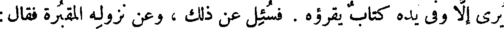
يرى إلا وفي يده كتاب يقرؤه . فسئل عن ذلك ، وعن نزوله المقبرة فقال :
File: 000761.gt.txt (if the image is defective, simply delete all Arabic text and the line will be excluded)

لم أر أوعظ من قبر ، ولا أمنع (1) من كتاب ، ولا أسلم من الوحدة .
File: 000762.gt.txt (if the image is defective, simply delete all Arabic text and the line will be excluded)

فقيل له : قد جاء في الوحدة ما جاء ! فقال : ما أفسدها للجاهل [ وأصلحها
File: 000763.gt.txt (if the image is defective, simply delete all Arabic text and the line will be excluded)

( ضروب من الخطوط )
File: 000764.gt.txt (if the image is defective, simply delete all Arabic text and the line will be excluded)

للعاقل! ] .
File: 000765.gt.txt (if the image is defective, simply delete all Arabic text and the line will be excluded)

وضروب من ا لخطوط بعد ذلك ، تدل على قدر منفعة الخط . قال
File: 000766.gt.txt (if the image is defective, simply delete all Arabic text and the line will be excluded)

الله تبارك وتعالى ( كراما كاتبين . يعلمون ما تفعلون ) وقال الله
File: 000767.gt.txt (if the image is defective, simply delete all Arabic text and the line will be excluded)

عز وجل ( في صحف مكرمة . مرفوعة مطهرة . بأيدي سفرة )
File: 000768.gt.txt (if the image is defective, simply delete all Arabic text and the line will be excluded)

32 وقال ( فأما من أوتي كتابه بيمينه ) وقال ( وأما من أوتي
File: 000769.gt.txt (if the image is defective, simply delete all Arabic text and the line will be excluded)

كتابه وراء ظهره ) وقال ( اقرأ كتابك كفى بنفسك اليوم
File: 000770.gt.txt (if the image is defective, simply delete all Arabic text and the line will be excluded)

عليك حسيبا ) .
File: 000771.gt.txt (if the image is defective, simply delete all Arabic text and the line will be excluded)
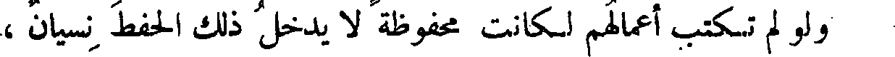
ولو لم تكتب أعمالهم لكانت محفوظة لا يدخل ذلك الحفظ نسيان ،
File: 000772.gt.txt (if the image is defective, simply delete all Arabic text and the line will be excluded)

ولكنه تعالى وعز ، علم أن كتاب المحفوظ ونسخه ، أوكد وأبلغ
File: 000773.gt.txt (if the image is defective, simply delete all Arabic text and the line will be excluded)

فى الإنذار والتحذير ، وأهيب فى الصدور .
File: 000774.gt.txt (if the image is defective, simply delete all Arabic text and the line will be excluded)
وبعد ؛ فإن هذه الشهرية الخراسانية ؛ يخرج لها أبدان فوق أبدان
File: 000775.gt.txt (if the image is defective, simply delete all Arabic text and the line will be excluded)

أمهاتها وآبائها من الخيل والبراذين ؛ وتأخذ من عتق الخيل ، ومن وثاجة(1)
File: 000776.gt.txt (if the image is defective, simply delete all Arabic text and the line will be excluded)

البراذين ؛ وليس نتاجها كنتاج البرذون خالصا والفرس خالصا .
File: 000777.gt.txt (if the image is defective, simply delete all Arabic text and the line will be excluded)

وما أشبه قرابة الحمار بالرمكة والحجر ؛ من قرابة الجمل الفالج 64
File: 000778.gt.txt (if the image is defective, simply delete all Arabic text and the line will be excluded)

البختي بقرابة القلوص الأعرابية .
File: 000779.gt.txt (if the image is defective, simply delete all Arabic text and the line will be excluded)

( الحمر الوشية )
File: 000780.gt.txt (if the image is defective, simply delete all Arabic text and the line will be excluded)

ويقال إن الحمر الوحشية ؛ وبخاصة الأخدرية ؛ أطول الحمير أعمارا
File: 000781.gt.txt (if the image is defective, simply delete all Arabic text and the line will be excluded)

وإنما هي من نتاج الأخدر ؛ فرس كان لأردشير بن بابك صار وحشيا(2)
File: 000782.gt.txt (if the image is defective, simply delete all Arabic text and the line will be excluded)

فحمى عدة عانات فضرب فيها،فجاء أولاده منها أعظم من سائر الحمر وأحسن ،
File: 000783.gt.txt (if the image is defective, simply delete all Arabic text and the line will be excluded)

وخرجت أعمارها عن أعمار الخيل وسائر الحمر - أعني حمر الوحش - فإن
File: 000784.gt.txt (if the image is defective, simply delete all Arabic text and the line will be excluded)
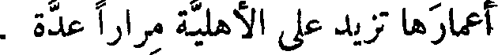
أعمارها تزيد على الأهلية مرارا عدة .
File: 000785.gt.txt (if the image is defective, simply delete all Arabic text and the line will be excluded)

( عير أبي سيارة )
File: 000786.gt.txt (if the image is defective, simply delete all Arabic text and the line will be excluded)

ولا يعرفون حمارا وحشيا عاش أكثر وعمر أطول من عير أبي سيارة
File: 000787.gt.txt (if the image is defective, simply delete all Arabic text and the line will be excluded)

عميلة بن أعزل(3) ؛ فإنهم لا يشكون أنه دفع عليه بأهل الموسم أربعين عاما ! !
File: 000788.gt.txt (if the image is defective, simply delete all Arabic text and the line will be excluded)
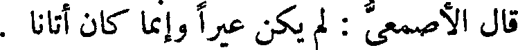
قال الأصمعي : لم يكن عيرا وإنما كان أتانا .
File: 000789.gt.txt (if the image is defective, simply delete all Arabic text and the line will be excluded)

كالإناث من الكلاب [ والبزاة ] وما أشبه ذلك ، وأحرص ما تكون
File: 000790.gt.txt (if the image is defective, simply delete all Arabic text and the line will be excluded)

عند ارتضاع جرائها [ من أطبائها ] ، حتى صار ذلك منها سببا للحرص والنهم
File: 000791.gt.txt (if the image is defective, simply delete all Arabic text and the line will be excluded)

( صوت الخصى )
File: 000792.gt.txt (if the image is defective, simply delete all Arabic text and the line will be excluded)

في ذلك .
File: 000793.gt.txt (if the image is defective, simply delete all Arabic text and the line will be excluded)
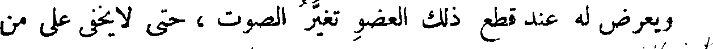
ويعرض له عند قطع ذلك العضو تغير الصوت ، حتى لا يخفى على من
File: 000794.gt.txt (if the image is defective, simply delete all Arabic text and the line will be excluded)

سمعه من غير أن يرى صاحبه أنه خصى ، وإن كان الذي يخاطبه ويناقله
File: 000795.gt.txt (if the image is defective, simply delete all Arabic text and the line will be excluded)

الكلام أخاه أو ابن عمه ، أو بعض أترابه من فحولة جنسه ، وهذا المعنى
File: 000796.gt.txt (if the image is defective, simply delete all Arabic text and the line will be excluded)

يعرض لخصيان الصقالبة أكثر مما يعرض للخراسانية ، وللسودان من
File: 000798.gt.txt (if the image is defective, simply delete all Arabic text and the line will be excluded)

أو عرق ، فليس يحتاج فى صحة تمييز ذلك ، ولا فى دقة(1) الحس فيه ، إلى
File: 000799.gt.txt (if the image is defective, simply delete all Arabic text and the line will be excluded)

حذق بقيافة ، بل تجد ذلك شائعا فى طباع السفلة والغثراء(2) ، وفى أجناس
File: 000800.gt.txt (if the image is defective, simply delete all Arabic text and the line will be excluded)

( شعر الخصى )
File: 000801.gt.txt (if the image is defective, simply delete all Arabic text and the line will be excluded)

الصبيان والنساء .
File: 000802.gt.txt (if the image is defective, simply delete all Arabic text and the line will be excluded)

ومتى خصى قبل الإنبات لم ينبت ، وإذا خصى بعد استحكام نبات
File: 000803.gt.txt (if the image is defective, simply delete all Arabic text and the line will be excluded)

الشعر فى مواضعه ، تساقط كله إلا شعر العانة ، فإنه وإن نقص من غلظه
File: 000804.gt.txt (if the image is defective, simply delete all Arabic text and the line will be excluded)

ومقدار عدده فإن الباقى كثير . ولا يعرض ذلك لشعر الرأس ، فإن شعر
File: 000805.gt.txt (if the image is defective, simply delete all Arabic text and the line will be excluded)

كتبك مفهومة كلها ، وما بالنا نفهم بعضها ولا نفهم أكثرها ، وما بالك
File: 000806.gt.txt (if the image is defective, simply delete all Arabic text and the line will be excluded)
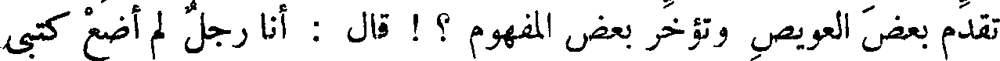
تقدم بعض العويص وتؤخر بعض المفهوم ؟ ! قال : أنا رجل لم أضع كتبى
File: 000807.gt.txt (if the image is defective, simply delete all Arabic text and the line will be excluded)

هذه لله ، وليست هي من كتب الدين ، ولو وضعتها هذا الوضع (1) الذى
File: 000808.gt.txt (if the image is defective, simply delete all Arabic text and the line will be excluded)

تدعونى إليه ، قلت حاجاتهم إلي فيها ، وإنما كانت غايتى المنالة ،
File: 000809.gt.txt (if the image is defective, simply delete all Arabic text and the line will be excluded)

فأنا أضع بعضها هذا الوضع (1) المفهوم ، لتدعوهم حلاوة ما فهموا إلى
File: 000810.gt.txt (if the image is defective, simply delete all Arabic text and the line will be excluded)

التماس فهم ما لم يفهموا ، وإنما قد كسبت في هذا التدبير ، إذ كنت إلى
File: 000811.gt.txt (if the image is defective, simply delete all Arabic text and the line will be excluded)

التكسب ذهبت ، ولكن ما بال إبراهيم النظام ، وفلان وفلان ،
File: 000812.gt.txt (if the image is defective, simply delete all Arabic text and the line will be excluded)
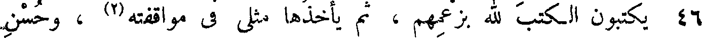
46 يكتبون الكتب لله بزعمهم ، ثم يأخذها مثلى فى مواقفته (2) ، وحسن
File: 000813.gt.txt (if the image is defective, simply delete all Arabic text and the line will be excluded)

نظره ، وشدة عنايته ، ولا يفهم أكثرها ؟ !
File: 000814.gt.txt (if the image is defective, simply delete all Arabic text and the line will be excluded)

وأقول : لو أن يوسف السمتى ، كتب هذه الشروط ، أيام جلس سلمان
File: 000815.gt.txt (if the image is defective, simply delete all Arabic text and the line will be excluded)
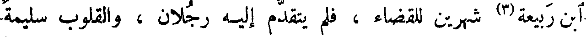
ابن ربيعة(3) شهرين للقضاء ، فلم يتقدم إليه رجلان ، والقلوب سليمة
File: 000816.gt.txt (if the image is defective, simply delete all Arabic text and the line will be excluded)

والحقوق على أهلها موفرة ، لكان ذلك خطلا ولغوا ؛ ولو كتب في دهره
File: 000817.gt.txt (if the image is defective, simply delete all Arabic text and the line will be excluded)

شروط سلمان ، لكان ذلك غرارة ونقصا ، وجهلا بالسياسة ، وبما يصلح
File: 000818.gt.txt (if the image is defective, simply delete all Arabic text and the line will be excluded)

( مواضع الإسهاب )
File: 000819.gt.txt (if the image is defective, simply delete all Arabic text and the line will be excluded)

فى كل دهر .
File: 000820.gt.txt (if the image is defective, simply delete all Arabic text and the line will be excluded)

ووجدنا الناس إذا خطبوا فى صلح بين العشائر أطالوا ، وإذا أنشدوا
File: 000821.gt.txt (if the image is defective, simply delete all Arabic text and the line will be excluded)
( مشى الخصى )
File: 000822.gt.txt (if the image is defective, simply delete all Arabic text and the line will be excluded)

ويعرض للخصى أن يشتد وقع رجله على أرض السطح ، حتى
File: 000823.gt.txt (if the image is defective, simply delete all Arabic text and the line will be excluded)

لو تفقدت وقع قدمه وقدم أخيه الفحل [ الذى هو أعبل(1) منه ] لوجدت
File: 000824.gt.txt (if the image is defective, simply delete all Arabic text and the line will be excluded)

لوقعه ووطئه شيئا لا تجده لصاحبه . وكأن العضو الذى كان يشد
File: 000825.gt.txt (if the image is defective, simply delete all Arabic text and the line will be excluded)

53 توتير النسا(2) ، ومعاقد الوركين (3) ومعاليق العصب ، لما بطل وذهب
File: 000826.gt.txt (if the image is defective, simply delete all Arabic text and the line will be excluded)

الذى كان يمسكه ويرفعه ، فيخف لذلك وقع رجله ، صار كالذى لا يتماسك
File: 000827.gt.txt (if the image is defective, simply delete all Arabic text and the line will be excluded)
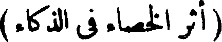
( أثر الخصاء فى الذكاء )
File: 000828.gt.txt (if the image is defective, simply delete all Arabic text and the line will be excluded)

ولا يحمل بعضه بعضا .
File: 000829.gt.txt (if the image is defective, simply delete all Arabic text and the line will be excluded)
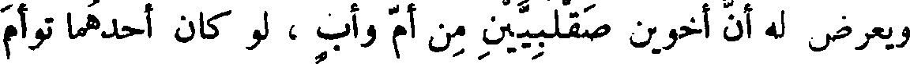
ويعرض له أن أخوين صقلبيين من أم وأب ، لو كان أحدهما توأم
File: 000830.gt.txt (if the image is defective, simply delete all Arabic text and the line will be excluded)

أخيه ، أنه متى خصى أحدهما خرج الخصى منهما أجود خدمة ، وأفطن
File: 000831.gt.txt (if the image is defective, simply delete all Arabic text and the line will be excluded)

لأبواب المعاطاة والمناولة ، وهو لها أتقن وبها أليق ، وتجده أيضا أذكى عقلا
File: 000832.gt.txt (if the image is defective, simply delete all Arabic text and the line will be excluded)

عند المخاطبة ، فيخص بذلك كله ، ويبقى أخوه على غثارة(4) فطرته ، وعلى
File: 000833.gt.txt (if the image is defective, simply delete all Arabic text and the line will be excluded)

غباوة غريزته ، وعلى بلاهة(5) الصقلبية، وعلى سوء فهم العجمية .
File: 000834.gt.txt (if the image is defective, simply delete all Arabic text and the line will be excluded)

ويد الإنسان لا تكون [ أبدا ] إلا خرقاء ، ولا تصير صناعا مالم تكن
File: 000835.gt.txt (if the image is defective, simply delete all Arabic text and the line will be excluded)

والذى يعد لها من الطيب والصبغ ، والحلى ، والكساء ، والفرش ،
File: 000836.gt.txt (if the image is defective, simply delete all Arabic text and the line will be excluded)

والآنية ، لكان فى ذلك ما كفى . ولو لم يكن له إلا الاهتمام بحفظها وحراستها ،
File: 000837.gt.txt (if the image is defective, simply delete all Arabic text and the line will be excluded)

وخوف العار من جنايتها والجناية عليها ، لكان فى ذلك المؤنة العظيمة ،
File: 000838.gt.txt (if the image is defective, simply delete all Arabic text and the line will be excluded)

والمشقة الشديدة
File: 000840.gt.txt (if the image is defective, simply delete all Arabic text and the line will be excluded)

فإذا بطل العضو الذى من أجله يكون اشتغال النفس بالأصناف
File: 000841.gt.txt (if the image is defective, simply delete all Arabic text and the line will be excluded)

الكثيرة ، من اللذة والألم ، فباضطرار أن تعلم أن تلك القوى لم تبطل
File: 000842.gt.txt (if the image is defective, simply delete all Arabic text and the line will be excluded)

من التركيب ، ولم تعدمها الخلقة ، وإنما سد دونها بسد ، وأدخل عليها
File: 000843.gt.txt (if the image is defective, simply delete all Arabic text and the line will be excluded)
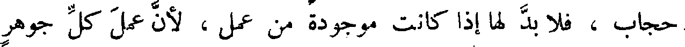
حجاب ، فلا بد لها إذا كانت موجودة من عمل ، لأن عمل كل جوهر
File: 000844.gt.txt (if the image is defective, simply delete all Arabic text and the line will be excluded)

لا يعدم إلا بعدم ذاته ، فإذا صرفت من وجه فاضت(1) من وجه ،
File: 000845.gt.txt (if the image is defective, simply delete all Arabic text and the line will be excluded)

ولا سيما إذا جمت ونازعت ، ولا بد إذا زخرت وغزرت، وطغت(2)
File: 000846.gt.txt (if the image is defective, simply delete all Arabic text and the line will be excluded)
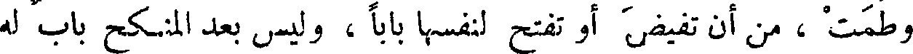
وطمت ، من أن تفيض أو تفتح لنفسها بابا ، وليس بعد المنكح باب له
File: 000847.gt.txt (if the image is defective, simply delete all Arabic text and the line will be excluded)

موقع كموقع المطعم ، فاجتمعت تلك القوى التى كانت للمنكح وما يشتمل
File: 000848.gt.txt (if the image is defective, simply delete all Arabic text and the line will be excluded)
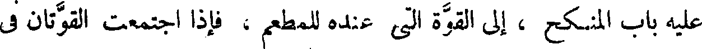
عليه باب المنكح ، إلى القوة التى عنده للمطعم ، فإذا اجتمعت القوتان فى
File: 000849.gt.txt (if the image is defective, simply delete all Arabic text and the line will be excluded)

باب واحد كان أبلغ فى حكمه ، وأبعد غاية فى سبيله ، ولذلك صار الخصى
File: 000850.gt.txt (if the image is defective, simply delete all Arabic text and the line will be excluded)

آكل من أخيه لأمه وأبيه ، وعلى قدر الاستمراء يكون هضمه ، وعلى
File: 000851.gt.txt (if the image is defective, simply delete all Arabic text and the line will be excluded)

قدر حاجة طبعه [ وحركة نفسه و ](3) الحرارة المتولدة عن الحركة يكون 51
File: 000852.gt.txt (if the image is defective, simply delete all Arabic text and the line will be excluded)

فإن ذلك إنما تصور له بشيء اعتراه ! ! فمن كان ذكيا حافظا فليقصد إلى
File: 000853.gt.txt (if the image is defective, simply delete all Arabic text and the line will be excluded)
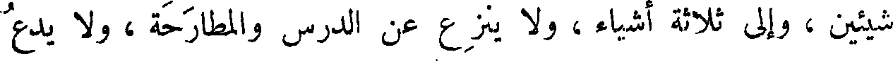
شيئين ، وإلى ثلاثة أشياء ، ولا ينزع عن الدرس والمطارحة ، ولا يدع
File: 000854.gt.txt (if the image is defective, simply delete all Arabic text and the line will be excluded)

أن يمر على سمعه وعلى بصره وعلى ذهنه ، ما قدر عليه من سائر الأصناف ،
File: 000855.gt.txt (if the image is defective, simply delete all Arabic text and the line will be excluded)

فيكون عالما بخواص ، ويكون غير غفل من سائر ما يجري فيه الناس
File: 000856.gt.txt (if the image is defective, simply delete all Arabic text and the line will be excluded)

ويخوضون فيه . ومن كان مع الدرس لا يحفظ شيئا ، إلا نسى ما هو أكثر
File: 000857.gt.txt (if the image is defective, simply delete all Arabic text and the line will be excluded)

منه ، فهو من الحفظ من أفواه الرجال أبعد .
File: 000858.gt.txt (if the image is defective, simply delete all Arabic text and the line will be excluded)

( جمع الكتب )
File: 000859.gt.txt (if the image is defective, simply delete all Arabic text and the line will be excluded)
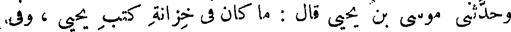
وحدثنى موسى بن يحيى قال : ما كان فى خزانة كتب يحيى ، وفى
File: 000860.gt.txt (if the image is defective, simply delete all Arabic text and the line will be excluded)

بيت مدارسه (1) كتاب إلا وله ثلاث نسخ .
File: 000861.gt.txt (if the image is defective, simply delete all Arabic text and the line will be excluded)
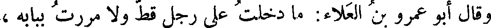
وقال أبو عمرو بن العلاء: ما دخلت على رجل قط ولا مررت ببابه ،
File: 000862.gt.txt (if the image is defective, simply delete all Arabic text and the line will be excluded)

31 فرأيته ينظر في دفتر وجليسه فارغ اليد ، إلا اعتقدت أنه أفضل
File: 000863.gt.txt (if the image is defective, simply delete all Arabic text and the line will be excluded)

منه وأعقل .
File: 000864.gt.txt (if the image is defective, simply delete all Arabic text and the line will be excluded)

وقال أبو عمرو بن العلاء : قيل لنا يوما : إن فى دار فلان ناسا قد
File: 000865.gt.txt (if the image is defective, simply delete all Arabic text and the line will be excluded)

اجتمعوا على سوءة ، وهم جلوس على خميرة لهم (2) ، وعندهم طنبور .
File: 000866.gt.txt (if the image is defective, simply delete all Arabic text and the line will be excluded)
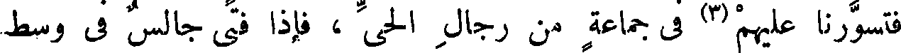
فتسورنا عليهم (3) فى جماعة من رجال الحى ، فإذا فتى جالس فى وسط
File: 000867.gt.txt (if the image is defective, simply delete all Arabic text and the line will be excluded)

به ، فلما قام عمر بن عبد العزيز ، جلله بالجلال ، وغطاه بالكرابيس (1) ،
File: 000868.gt.txt (if the image is defective, simply delete all Arabic text and the line will be excluded)
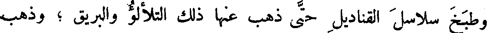
وطبخ سلاسل القناديل حتى ذهب عنها ذلك التلألؤ والبريق ؛ وذهب
File: 000869.gt.txt (if the image is defective, simply delete all Arabic text and the line will be excluded)

إلى أن ذلك الصنيع مجانب لسنة الإسلام ، وأن ذلك الحسن الرائع
File: 000870.gt.txt (if the image is defective, simply delete all Arabic text and the line will be excluded)

والمحاسن الدقاق ، مذهلة للقلوب ، ومشغلة دون الخشوع ، وأن البال
File: 000871.gt.txt (if the image is defective, simply delete all Arabic text and the line will be excluded)

لا يكون مجتمعا وهناك شيء يفرقه ويعترض عليه .
File: 000872.gt.txt (if the image is defective, simply delete all Arabic text and the line will be excluded)

( صفة كتب الزنادقة )
File: 000873.gt.txt (if the image is defective, simply delete all Arabic text and the line will be excluded)

والذى يدل على ما قلنا ، أنه ليس فى كتبهم مثل سائر ، ولا خبر
File: 000874.gt.txt (if the image is defective, simply delete all Arabic text and the line will be excluded)

طريف، ولا صنعة أدب ، ولا حكمة غريبة، ولا فلسفة ،ولا مسألة كلامية،
File: 000875.gt.txt (if the image is defective, simply delete all Arabic text and the line will be excluded)

ولا تعريف صناعة ، ولا استخراج آلة ، ولا تعليم فلاحة ، ولا تدبير
File: 000877.gt.txt (if the image is defective, simply delete all Arabic text and the line will be excluded)

ذكر النور والظلمة ، وتناكح الشياطين ، وتسافد العفاريت ، وذكر
File: 000878.gt.txt (if the image is defective, simply delete all Arabic text and the line will be excluded)

الصنديد ، والتهويل بعمود السنخ(4) ، والإخبار عن شقلون ، وعن الهامة
File: 000879.gt.txt (if the image is defective, simply delete all Arabic text and the line will be excluded)

[ والهمامة ] . و [كله ] هذر وعى وخرافة ، وسخرية وتكذب ، لا ترى
File: 000880.gt.txt (if the image is defective, simply delete all Arabic text and the line will be excluded)

فيه موعظة حسنة ، ولا حديثا مونقا ، ولاتدبير معاش ، ولاسياسة عامة ،
File: 000881.gt.txt (if the image is defective, simply delete all Arabic text and the line will be excluded)

ولاترتيب خاصة(5) . فأى كتاب أجهل ، وأى تدبير أفسد من كتاب
File: 000882.gt.txt (if the image is defective, simply delete all Arabic text and the line will be excluded)

وتعظيم العلم دليل على شرف النفس ، وعلى السلامة من سكر الآفات .
File: 000883.gt.txt (if the image is defective, simply delete all Arabic text and the line will be excluded)

قلت لإبراهيم : إن إنفاق الزنادقة على تحصيل الكتب ، كإنفاق النصارى على
File: 000884.gt.txt (if the image is defective, simply delete all Arabic text and the line will be excluded)

البيع ، ولو كانت كتب الزنادقة كتب حكم وكتب فلسفة ، وكتب مقاييس
File: 000885.gt.txt (if the image is defective, simply delete all Arabic text and the line will be excluded)

وسنن [و]تبين وتبيين(1) ، أو لو كانت كتبهم كتبا تعرف الناس أبواب الصناعات،
File: 000886.gt.txt (if the image is defective, simply delete all Arabic text and the line will be excluded)
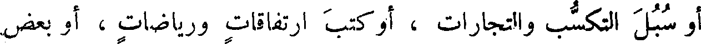
أو سبل التكسب والتجارات ، أو كتب ارتفاقات ورياضات ، أو بعض
File: 000888.gt.txt (if the image is defective, simply delete all Arabic text and the line will be excluded)

ولا يبعد من مأثم - لكانوا ممن قد يجوز أن يظن بهم تعظيم البيان ، والرغبة
File: 000889.gt.txt (if the image is defective, simply delete all Arabic text and the line will be excluded)

29 في التبين (2) ، ولكنهم ذهبوا فيها مذهب الديانة ، [ و ] وعلى طريق تعظيم
File: 000891.gt.txt (if the image is defective, simply delete all Arabic text and the line will be excluded)

النصارى على صلبان الذهب ، أو كإنفاق الهند على سدنة البددة. ولو كانوا
File: 000892.gt.txt (if the image is defective, simply delete all Arabic text and the line will be excluded)

أرادوا العلم لكان العلم لهم معرضا،وكتب الحكمة لهم مبذولة، والطرق إليها سهلة
File: 000893.gt.txt (if the image is defective, simply delete all Arabic text and the line will be excluded)

معروفة . فما بالهم لا يصنعون ذلك إلا بكتب دياناتهم ، كما يزخرف النصارى
File: 000894.gt.txt (if the image is defective, simply delete all Arabic text and the line will be excluded)

بيوت عباداتهم ! ولو كان هذا المعنى مستحسنا عند المسلمين ، أو كانوا يرون
File: 000895.gt.txt (if the image is defective, simply delete all Arabic text and the line will be excluded)

أن ذلك داعية إلى العبادة ، وباعثة على الخشوع ، لبلغوا فى ذلك بعفوهم ،
File: 000896.gt.txt (if the image is defective, simply delete all Arabic text and the line will be excluded)

ما لا تبلغه النصارى بغاية الجهد .
File: 000897.gt.txt (if the image is defective, simply delete all Arabic text and the line will be excluded)

( مسجد دمشق )
File: 000898.gt.txt (if the image is defective, simply delete all Arabic text and the line will be excluded)
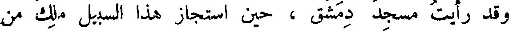
وقد رأيت مسجد دمشق ، حين استجاز هذا السبيل ملك من
File: 000899.gt.txt (if the image is defective, simply delete all Arabic text and the line will be excluded)

ملوكها، ومن رآه فقد علم أن أحدا لا يرومه ، وأن الروم لا تسخوا أنفسهم
File: 000900.gt.txt (if the image is defective, simply delete all Arabic text and the line will be excluded)

حضر « كتب الحكماء وما دونت العلماء من صنوف البلاغات والصناعات،
File: 000901.gt.txt (if the image is defective, simply delete all Arabic text and the line will be excluded)
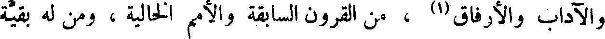
والآداب والإرفاق(1) ، من القرون السابقة والأمم الخالية ، ومن له بقية
File: 000902.gt.txt (if the image is defective, simply delete all Arabic text and the line will be excluded)

ومن لا بقية له ، أبقى ذكرا وأرفع قدرا وأكثر ردا ، لأن الحكمة أنفع
File: 000903.gt.txt (if the image is defective, simply delete all Arabic text and the line will be excluded)

لمن ورثها ، من جهة الانتفاع بها ، وأحسن في الأحدوثة ، لمن أحب الذكر
File: 000905.gt.txt (if the image is defective, simply delete all Arabic text and the line will be excluded)

الجميل » .
File: 000906.gt.txt (if the image is defective, simply delete all Arabic text and the line will be excluded)

والكتب بذلك أولى من بنيان الحجارة وحيطان المدر ؛ لأن من
File: 000907.gt.txt (if the image is defective, simply delete all Arabic text and the line will be excluded)

شأن الملوك أن يطمسوا على آثار من قبلهم ، وأن يميتوا ذكر أعدائهم،
File: 000908.gt.txt (if the image is defective, simply delete all Arabic text and the line will be excluded)

فقد هدموا بذلك السبب [ أكثر ] المدن وأكثر الحصون ، كذلك كانوا
File: 000909.gt.txt (if the image is defective, simply delete all Arabic text and the line will be excluded)

أيام العجم وأيام الجاهلية ، وعلى ذلك هم فى أيام الإسلام ؛ كما هدم
File: 000910.gt.txt (if the image is defective, simply delete all Arabic text and the line will be excluded)

عثمان صومعة غمدان ، وكما هدم الآطام (2) التى كانت بالمدينة ، وكما هدم
File: 000911.gt.txt (if the image is defective, simply delete all Arabic text and the line will be excluded)

زياد كل قصر ومصنع كان لابن عامر (3) ، وكما هدم أصحابنا بناء مدن
File: 000912.gt.txt (if the image is defective, simply delete all Arabic text and the line will be excluded)

الشامات (4) لبنى مروان .
File: 000913.gt.txt (if the image is defective, simply delete all Arabic text and the line will be excluded)

لما تدركه حواسنا ، وتشاهده نفوسنا ، لقلت المعرفة ، وسقطت الهمة ،
File: 000914.gt.txt (if the image is defective, simply delete all Arabic text and the line will be excluded)

وارتفعت العزيمة ، وعاد الرأى عقيما ، والخاطر فاسدا ؛ ولكل الحد
File: 000915.gt.txt (if the image is defective, simply delete all Arabic text and the line will be excluded)

( أشرف الكتب )
File: 000916.gt.txt (if the image is defective, simply delete all Arabic text and the line will be excluded)

وتبلد العقل .
File: 000918.gt.txt (if the image is defective, simply delete all Arabic text and the line will be excluded)

الله تعالى ، فيها الهدى والرحمة ، والإخبار عن كل حكمة ، وتعريف كل سيئة
File: 000919.gt.txt (if the image is defective, simply delete all Arabic text and the line will be excluded)

وحسنة . وما زالت كتب الله تعالى فى الألواح والصحف ، والمهارق (1)
File: 000920.gt.txt (if the image is defective, simply delete all Arabic text and the line will be excluded)

والمصاحف . وقال الله عز وجل ( الم ذلك الكتاب لا ريب فيه ) .
File: 000921.gt.txt (if the image is defective, simply delete all Arabic text and the line will be excluded)

وقال ( ما فرطنا فى الكتاب من شيء) ، ويقال لأهل التوراة والإنجيل :
File: 000922.gt.txt (if the image is defective, simply delete all Arabic text and the line will be excluded)

( مواصلةالسير فى خدمة العلم )
File: 000923.gt.txt (if the image is defective, simply delete all Arabic text and the line will be excluded)

أهل الكتاب .
File: 000924.gt.txt (if the image is defective, simply delete all Arabic text and the line will be excluded)

وينبغى أن يكون سبيلنا لمن بعدنا ، كسبيل من كان قبلنا فينا . على
File: 000925.gt.txt (if the image is defective, simply delete all Arabic text and the line will be excluded)

أنا وقد وجدنا من العبرة أكثر مما وجدوا ، كما أن من بعدنا يجد من العبرة
File: 000926.gt.txt (if the image is defective, simply delete all Arabic text and the line will be excluded)

لنسخته . فقال ابن الجهم : لكنى ما رغبنى فيه إلا الذى زهدك فيه ؛ وما
File: 000927.gt.txt (if the image is defective, simply delete all Arabic text and the line will be excluded)

قرأت قط كتابا كبيرا فأخلانى من فائدة ، وما أحصى كم قرأت من صغار
File: 000928.gt.txt (if the image is defective, simply delete all Arabic text and the line will be excluded)

الكتب فخرجت منها كما دخلت .
File: 000931.gt.txt (if the image is defective, simply delete all Arabic text and the line will be excluded)

فقد فرغت الجارية من الكتاب وهو بعد لم يحكم مقالة واحدة ، على أنه
File: 000932.gt.txt (if the image is defective, simply delete all Arabic text and the line will be excluded)

حر مخير ، وتلك أمة مقصورة ، وهو أحرص على قراءة الكتاب من سلمويه
File: 000933.gt.txt (if the image is defective, simply delete all Arabic text and the line will be excluded)

على تعليم جارية . قال ابن الجهم : قد كنت أظن أنه لم يفهم منه شكلا
File: 000934.gt.txt (if the image is defective, simply delete all Arabic text and the line will be excluded)

واحدا ، وأراك تزعم أنه قد فرغ من مقالة ! ! قال العتبى : وكيف ظننت
File: 000935.gt.txt (if the image is defective, simply delete all Arabic text and the line will be excluded)

به هذا الظن ، وهو رجل ذو لسان وأدب ؟ قال : لأنى سمعته يقول لابنه :
File: 000936.gt.txt (if the image is defective, simply delete all Arabic text and the line will be excluded)

كم أنفقت على كتاب كذا ؟ قال : أنفقت عليه كذا، [قال(2)] : إنما رغبنى
File: 000937.gt.txt (if the image is defective, simply delete all Arabic text and the line will be excluded)

فى العلم أنى ظننت أنى أنفق عليه قليلا وأكتسب كثيرا ، فأما إذا صرت أنفق
File: 000938.gt.txt (if the image is defective, simply delete all Arabic text and the line will be excluded)

الكثير ، وليس فى يدي إلا المواعيد ، فإنى لا أريد العلم بشيء ! !
File: 000939.gt.txt (if the image is defective, simply delete all Arabic text and the line will be excluded)

سنة ولم تمتل عروقى (1) من الشراب مخافة الزيادة فى الشهوة ، والنقصان
File: 000940.gt.txt (if the image is defective, simply delete all Arabic text and the line will be excluded)

من العزم - أليس (2) فى ذلك ما يقطع الدواعى ، ويسكن الحركة إن
File: 000941.gt.txt (if the image is defective, simply delete all Arabic text and the line will be excluded)

هاجت ؟ ! قال : قلنا : صدقت . قال : فإنى بعد جميع ما وصفت لكم ،
File: 000942.gt.txt (if the image is defective, simply delete all Arabic text and the line will be excluded)

لأسمع نغمة المرأة فأظن مرة أن كبدى قد ذابت ، وأظن مرة أنها قد
File: 000943.gt.txt (if the image is defective, simply delete all Arabic text and the line will be excluded)

انصدعت ، وأظن مرة أن عقلى قد اختلس ، وربما اضطرب فؤادى عند
File: 000944.gt.txt (if the image is defective, simply delete all Arabic text and the line will be excluded)

ضحك إحداهن ، حتى أظن أنه قد خرج من فمى ، فكيف ألوم علين
File: 000945.gt.txt (if the image is defective, simply delete all Arabic text and the line will be excluded)

غيرى ؟ !
File: 000946.gt.txt (if the image is defective, simply delete all Arabic text and the line will be excluded)

فإن كان - حفظك الله تعالى - قد صدق على نفسه فى تلك الحال ،
File: 000947.gt.txt (if the image is defective, simply delete all Arabic text and the line will be excluded)

بعد أن اجتمعت فيه هذه الخصال ، فما ظنك بهذا قبل هذا الوقت بنحو
File: 000948.gt.txt (if the image is defective, simply delete all Arabic text and the line will be excluded)

ستين سنة أو سبعين سنة ؟ ! وما ظنك به قبل الخصاء بساعة ؟ ! وليس فى
File: 000949.gt.txt (if the image is defective, simply delete all Arabic text and the line will be excluded)

الاستطاعة ولا فى صفة الإمكان ، أن يحتجز عن إرادة النساء ، ومعه من
File: 000950.gt.txt (if the image is defective, simply delete all Arabic text and the line will be excluded)

الحاجة إليهن والشهوة لهن هذا المقدار ! الله تعالى أرحم بخلقه ، وأعدل على
File: 000951.gt.txt (if the image is defective, simply delete all Arabic text and the line will be excluded)

عباده ، من أن يكلفهم هجران شيء ، قد وصله بقلوبهم هذا الوصل ،
File: 000952.gt.txt (if the image is defective, simply delete all Arabic text and the line will be excluded)

وأكده هذا التأكيد .
File: 000953.gt.txt (if the image is defective, simply delete all Arabic text and the line will be excluded)

وقد خصى نفسه من الصابئين رجال ، قد عرفناهم بأسمائهم وأنسابهم ،
File: 000954.gt.txt (if the image is defective, simply delete all Arabic text and the line will be excluded)

وصفاتهم وأحاديثهم . وفى الذى ذكرنا كفاية إن شاء الله تعالى .
File: 000955.gt.txt (if the image is defective, simply delete all Arabic text and the line will be excluded)

( استئذان عثمان بن مظعون في الخصاء)
File: 000956.gt.txt (if the image is defective, simply delete all Arabic text and the line will be excluded)

وقد ذ كر أن عثمان بن مظعون ، استأذن النبى صلى الله عليه وسلم
File: 000957.gt.txt (if the image is defective, simply delete all Arabic text and the line will be excluded)

فى السياحة فقال : « سياحة أمتى الجماعة » . واستأذنه فى الخصاء فقال :
File: 000958.gt.txt (if the image is defective, simply delete all Arabic text and the line will be excluded)

وقالوا : ومتى كان الأديب (1) جامعا بارعا ، وكانت مواريثه كتبا
File: 000959.gt.txt (if the image is defective, simply delete all Arabic text and the line will be excluded)

بارعة وآدابا جامعة ، كان الولد أجدر أن يرى التعلم حظا ، وأجدر أن
File: 000960.gt.txt (if the image is defective, simply delete all Arabic text and the line will be excluded)

يسرع التعليم إليه ، ويرى تركه خطأ ، وأجدر أن يجرى من الأدب على
File: 000961.gt.txt (if the image is defective, simply delete all Arabic text and the line will be excluded)

طريق قد أنهج له ، ومنهاج قد وطئ له ، وأجدر أن يسرى إليه عرق
File: 000962.gt.txt (if the image is defective, simply delete all Arabic text and the line will be excluded)

من نجله ، وسقى من غرسه ، وأجدر أن يجعل بدل الطلب للكسب(2) ،
File: 000963.gt.txt (if the image is defective, simply delete all Arabic text and the line will be excluded)

النظر فى الكتب ، فلا يأتى عليه من الأيام مقدار الشغل بجمع الكتب ،
File: 000964.gt.txt (if the image is defective, simply delete all Arabic text and the line will be excluded)

والاختلاف فى سماع العلم ، إلا وقد بلغ بالكفاية وغاية الحاجة . وإنما تفسد
File: 000965.gt.txt (if the image is defective, simply delete all Arabic text and the line will be excluded)

الكفاية من [ له ](3) تمت آلاته(4) ، وتوافت إليه أسبابه ، فأما الحدث
File: 000966.gt.txt (if the image is defective, simply delete all Arabic text and the line will be excluded)

الغرير ، والمنقوص الفقير ، فخير مواريثه الكفاية إلى أن يبلغ التمام ، ويكمل
File: 000967.gt.txt (if the image is defective, simply delete all Arabic text and the line will be excluded)

للطلب . فخير ميراث ورث كتب وعلم ، وخير المورثين من أورث ما يجمع
File: 000968.gt.txt (if the image is defective, simply delete all Arabic text and the line will be excluded)

ولا يفرق ، ويبصر ولا يعمى ، ويعطى ولا يأخذ ، ويجود بالكل دون
File: 000969.gt.txt (if the image is defective, simply delete all Arabic text and the line will be excluded)

البعض ، ويدع لك الكنز الذى ليس للسلطان فيه حق ، والركاز (5) الذى
File: 000970.gt.txt (if the image is defective, simply delete all Arabic text and the line will be excluded)

ليس للفقراء فيه نصيب ، والنعمة التى ليس للحاسد فيها حيلة ، ولا للصوص
File: 000971.gt.txt (if the image is defective, simply delete all Arabic text and the line will be excluded)

فيها رغبة ، وليس للخصم عليك فيه حجة ، ولا على الجار فيه مئونة .
File: 000973.gt.txt (if the image is defective, simply delete all Arabic text and the line will be excluded)

وأما ديمقراط فإنه قال : ينبغى أن يعرف أنه لا بد من أن يكون لكل
File: 000974.gt.txt (if the image is defective, simply delete all Arabic text and the line will be excluded)

كتاب علم وضعه أحد من الحكماء ، ثمانية أوجه : منها الهمة ، والمنفعة ،
File: 000975.gt.txt (if the image is defective, simply delete all Arabic text and the line will be excluded)

والنسبة ، والصحة ، والصنف ، والتأليف ، والإسناد ، والتدبير ، فأولها أن
File: 000976.gt.txt (if the image is defective, simply delete all Arabic text and the line will be excluded)

الاستمراء ، لأن الشهوة من أمتن (1) أبواب الاستمراء ، والحركة من أعظم
File: 000977.gt.txt (if the image is defective, simply delete all Arabic text and the line will be excluded)

[ أبواب ] الحرارة .
File: 000979.gt.txt (if the image is defective, simply delete all Arabic text and the line will be excluded)

ودوام الأكل فى الإناث أعم منه في الذكور ، وكذلك الحجر دون
File: 000980.gt.txt (if the image is defective, simply delete all Arabic text and the line will be excluded)

الفرس ، وكذلك الرمكة دون البرذون ، وكذلك النعجة (2) دون الكبش ،
File: 000981.gt.txt (if the image is defective, simply delete all Arabic text and the line will be excluded)

وكذلك النساء فى البيوت دون الرجال . وما أشك أن الرجل يأكل فى
File: 000982.gt.txt (if the image is defective, simply delete all Arabic text and the line will be excluded)

المجلس الواحد ما لا تأكل المرأة ، ولكنها تستوفى ذلك المقدار وتربى
File: 000983.gt.txt (if the image is defective, simply delete all Arabic text and the line will be excluded)

عليه مقطعا غير منظوم ، وهى بدوام ذلك منها ، يكون حاصل طعامها
File: 000984.gt.txt (if the image is defective, simply delete all Arabic text and the line will be excluded)

أكثر . وهن يناسبن الصبيان في هذا الوجه ، لأن طبع الصبى سريع
File: 000985.gt.txt (if the image is defective, simply delete all Arabic text and the line will be excluded)

الهضم ، سريع الكلب ، قصير مدة الأكل ، قليل مقدار الطعم ،
File: 000986.gt.txt (if the image is defective, simply delete all Arabic text and the line will be excluded)

فللمرأة كثرة معاودتها ، ثم تبين بكثرة مقدار المأكول . فيصير للخصى
File: 000987.gt.txt (if the image is defective, simply delete all Arabic text and the line will be excluded)

نصيبان : نصيبه من شبه النساء ، ثم اجتماع قوى شهوتيه في باب واحد ،
File: 000988.gt.txt (if the image is defective, simply delete all Arabic text and the line will be excluded)

أعنى شهوة المنكح التى تحولت ، وشهوة المطعم .
File: 000989.gt.txt (if the image is defective, simply delete all Arabic text and the line will be excluded)

قال ، وقيل لبعض الأعراب : أى شيء آكل ؟ قال : برذونة
File: 000990.gt.txt (if the image is defective, simply delete all Arabic text and the line will be excluded)

رغوث (3) .
File: 000991.gt.txt (if the image is defective, simply delete all Arabic text and the line will be excluded)

ولشدة نهم الإناث ، صارت اللبؤة أشد عراما وأنزق ، إذا طلبت
File: 000992.gt.txt (if the image is defective, simply delete all Arabic text and the line will be excluded)

الإنسان لتأكله ، وكذلك (4) صارت إناث الأجناس الصائدة [ أصيد ] ،
File: 000993.gt.txt (if the image is defective, simply delete all Arabic text and the line will be excluded)

من النتاج الذى ركبوا ؛ وزعموا أن ذلك مشهور فى بلاد الحبشة ؛ وأقاصى
File: 000994.gt.txt (if the image is defective, simply delete all Arabic text and the line will be excluded)

اليمن . وقال آخرون : ليس كل خلق مركب لا ينسل ولا يبقى نجله ولا
File: 000995.gt.txt (if the image is defective, simply delete all Arabic text and the line will be excluded)

يتلاقح نسله ؛ على ما حكينا من شأن. الورشان والراعبى (1) . وهؤلاء
File: 000996.gt.txt (if the image is defective, simply delete all Arabic text and the line will be excluded)

وما أشبههم يفسدون العلم ، ويتهمون الكتب ، وتغرهم كثرة أتباعهم ممن
File: 000997.gt.txt (if the image is defective, simply delete all Arabic text and the line will be excluded)

تجده مستهترا بسماع الغريب ، ومغرما بالطرائف والبدائع . ولو أعطوا مع
File: 000998.gt.txt (if the image is defective, simply delete all Arabic text and the line will be excluded)

هذا الاستهتار (2) نصيبا من التثبت ، وحظا من التوقى ؛ لسلمت الكتب
File: 000999.gt.txt (if the image is defective, simply delete all Arabic text and the line will be excluded)

( النتاج المركب فى الطيور )
File: 001000.gt.txt (if the image is defective, simply delete all Arabic text and the line will be excluded)

من كثير من الفساد .
File: 001001.gt.txt (if the image is defective, simply delete all Arabic text and the line will be excluded)

وأنا رأيت طائرا له صوت غير حسن ؛ فقال لي صاحب الطيور : إنه
File: 001002.gt.txt (if the image is defective, simply delete all Arabic text and the line will be excluded)

من نتاج ما بين القمرى(3) والفاختة(4) .
File: 001003.gt.txt (if the image is defective, simply delete all Arabic text and the line will be excluded)

وقناص الطير ، ومن يأىي كل أوقة(5) وغيضة فى التماس الصيد ؛
File: 001004.gt.txt (if the image is defective, simply delete all Arabic text and the line will be excluded)

يزعمون أن أجناسا من الطير الأوابد والقواطع ، تلتقي على المياه فتتسافد ؛
File: 001005.gt.txt (if the image is defective, simply delete all Arabic text and the line will be excluded)

وأنهم لا يزالون يرون أشكالا لم يروها قط ؛ فيقدرون أنها من تلاقح
File: 001006.gt.txt (if the image is defective, simply delete all Arabic text and the line will be excluded)

تلك المختلفة .